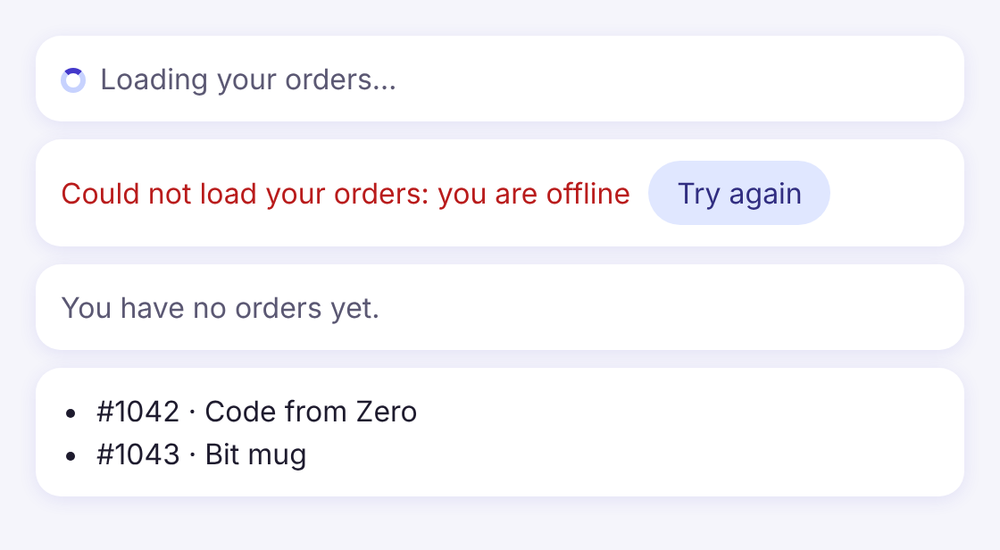
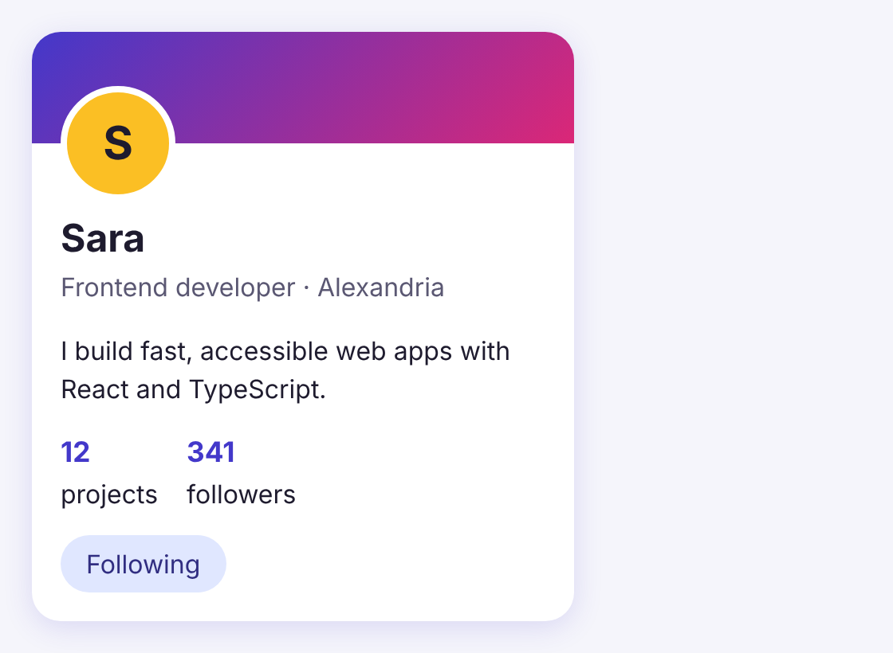
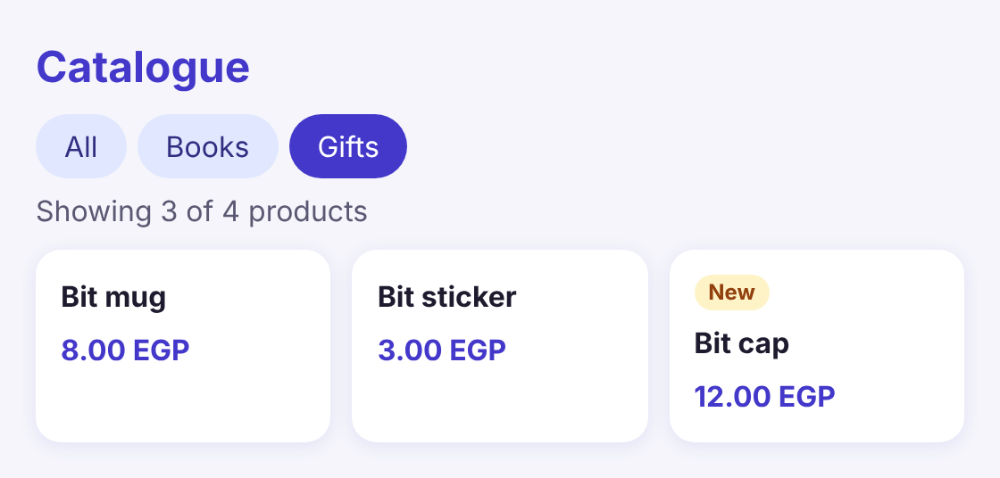
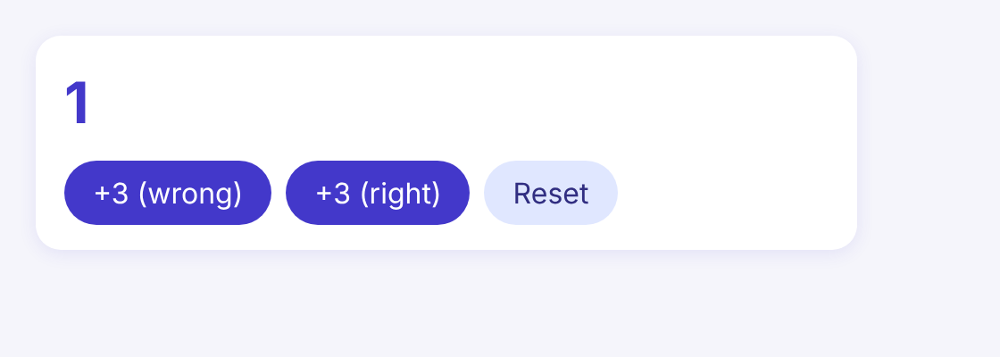
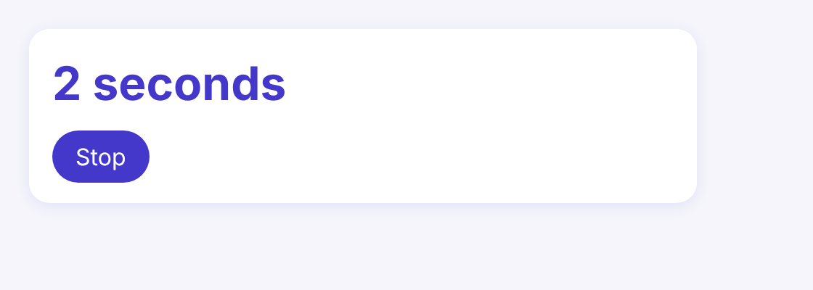
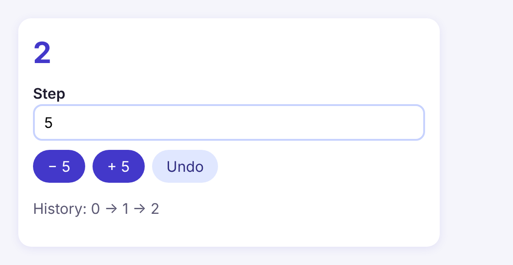
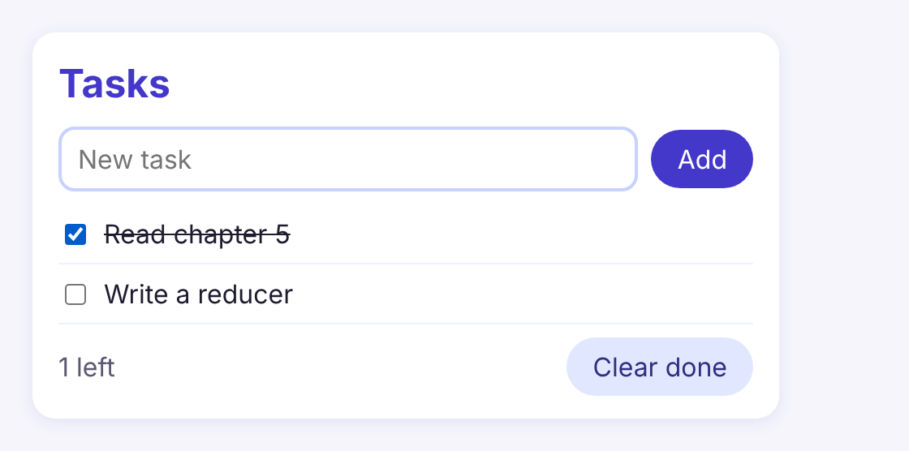
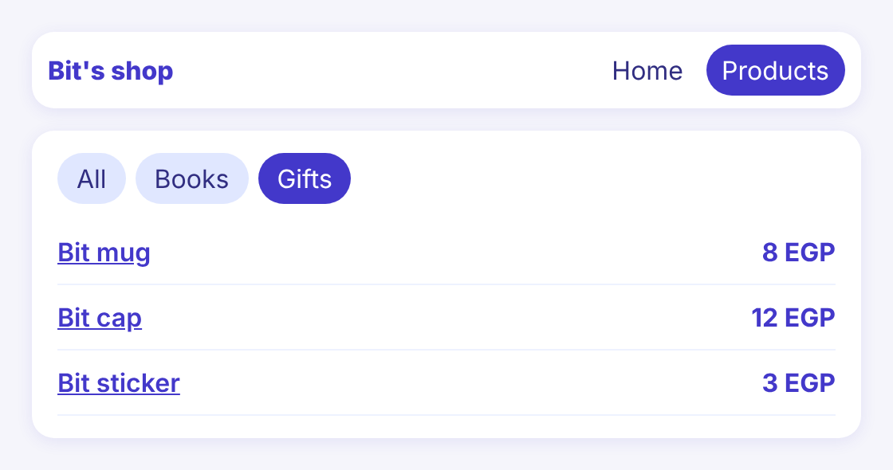
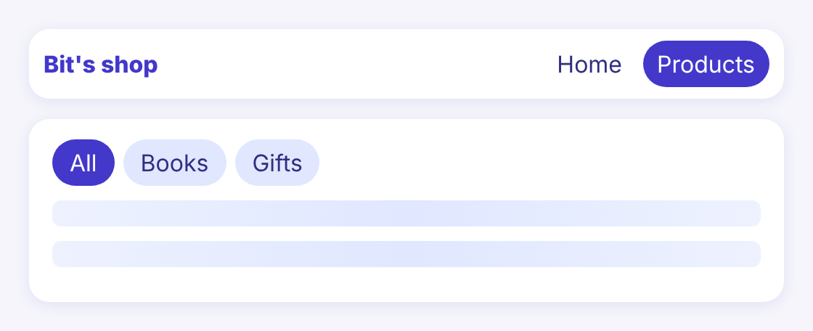
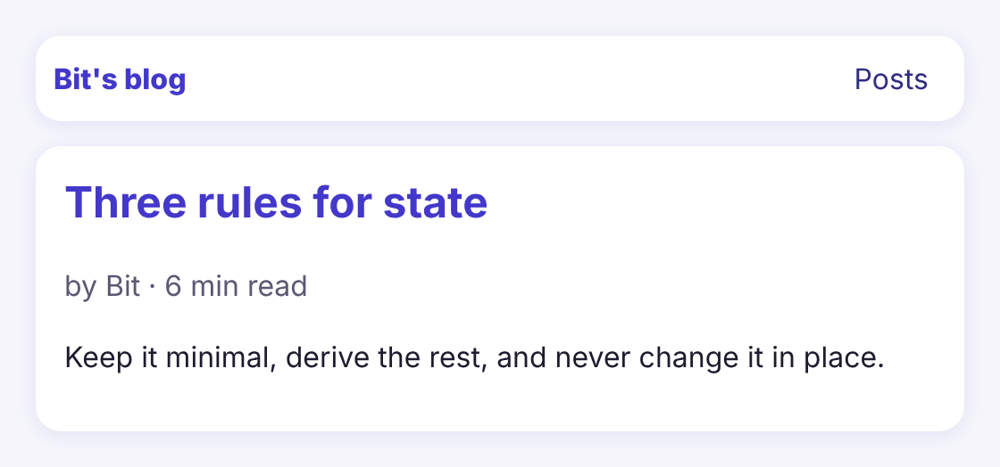

The code in this book is tested with Node.js 22. Every listing and its output is produced from the files in the book’s code repository.
JavaScript, Node.js and other names mentioned in this book are trademarks of their owners and are used for identification only.
ISBN: ———
Contents
Part 1: The Language
1Modern JavaScript in Depth
2TypeScript for Real Projects
3Modules, Tooling and Build Systems
Part 2: React
4Components and Rendering
5State, Effects and Data Flow
6Routing and Server Data
7Forms and Validation
8Global State without Pain
Part 3: Quality
9Design Systems and Component Libraries
10Accessibility (WCAG) in Practice
11Testing: Unit, Component and End-to-End
12Performance and Core Web Vitals
13Frontend Security
14Internationalisation and RTL
Part 4: Senior Work
15Frontend Architecture at Scale
16Server Rendering with Next.js
17Code Review, Mentoring and Technical Decisions
18Capstone: A Production Dashboard
Appendix
Answers to the Exercises
1
Chapter 1
Modern JavaScript in Depth
In this chapter you will learn to
predict when data is copied and when it is shared, and update it without side effects
use closures to keep state private
write classes with private fields, and never lose this again
use the modern toolkit: ?., ??, ??=, at, toSorted, Object.groupBy
choose between arrays, Map and Set, and write generators
explain the order in which asynchronous code runs, and combine promises safely
design errors that tell the whole story
In Book 1 you learned enough JavaScript to build a real app. Frameworks like React and Vue are written in that same language, and almost every confusing bug in them is really a JavaScript question: why did this value change? where did this go? why did that line run first? This chapter answers those questions once and for all. It is the foundation for everything else in this book.
Bit
Welcome back! I have been practising too. In this book we stop asking “does it work?” and start asking “will it still work next year, when the app is ten times bigger?” That is the senior question.
1.1Values and references
JavaScript has two kinds of values. Primitives (numbers, strings, booleans, null, undefined, bigint and symbol) are copied when you assign them. Objects, which include arrays and functions, are not copied: the variable holds a reference, an address that points to the object.
values.js
// Primitives are copiedlet a = 10;
let b = a;
b = 20;
console.log(a, b);
// Objects are shared: two names, one objectconst original = { name: "Sara", tags: ["js"] };
const same = original;
same.name = "Huda";
console.log(original.name);
// Spread copies only the first levelconst shallow = { ...original };
shallow.tags.push("ts");
console.log(original.tags);
// structuredClone copies every levelconst deep = structuredClone(original);
deep.tags.push("react");
console.log(original.tags, deep.tags);
Changing b did not change a: the number was copied.
same and original are two names for one object, so a change through either name is visible through both.
Spread, { ...original }, makes a shallow copy: a new outer object, but the inner array is still shared. That is why "ts" appeared in the original.
structuredClone makes a deep copy: every level is new. It is built into browsers and Node.
Updating without side effects
React and Vue both decide what to redraw by comparing references: if the object is the same object, they may assume nothing changed. So professionals rarely change data in place. They build a new object that shares the unchanged parts with the old one. This style is called immutable updates:
immutable.js
const cart = { items: [{ id: 1, qty: 1 }], coupon: null };
// Return a new object instead of changing the old onefunction addOne(cart, id) {
return {
...cart,
items: cart.items.map((item) =>
item.id === id ? { ...item, qty: item.qty + 1 } : item,
),
};
}
const next = addOne(cart, 1);
console.log(cart.items[0].qty, next.items[0].qty);
console.log(cart === next, cart.items === next.items);
Terminal
1 2
false false
The old cart still has quantity 1, and the new one has 2. Both the cart and the items array are new objects (false false), while the items that did not change are reused. Read addOne slowly: spread the old object, then override only what changed, at every level on the way down.
1.2Scope and closures
A scope is the region of code where a name exists. Variables declared with let and const live in the nearest block { … }. A function can see the variables of the scopes around it, even after those outer functions have finished. A function together with the variables it remembers is called a closure.
closures.js
function makeCounter(start = 0) {
let count = start; // private: only the three functions can see itreturn {
up: () => ++count,
down: () => --count,
value: () => count,
};
}
const likes = makeCounter();
const stock = makeCounter(10);
likes.up();
likes.up();
stock.down();
console.log(likes.value(), stock.value());
console.log(likes.count); // undefined: there is no way in from outside
Terminal
2 9
undefined
Each call to makeCounter creates a fresh count, so likes and stock do not share anything. Nobody outside can read or break count; they can only use the three functions. This is how JavaScript had private data long before classes had private fields, and it is exactly how React hooks and Vue composables keep their state.
Closures also make small, reusable tools. once wraps any function so it runs a single time, which is handy for connecting to a server or showing a welcome message:
once.js
function once(fn) {
let done = false;
let result;
return (...args) => {
if (!done) {
done = true;
result = fn(...args);
}
return result;
};
}
const connect = once(() => {
console.log("Connecting to the server…");
return"connection #1";
});
console.log(connect());
console.log(connect());
Terminal
Connecting to the server…
connection #1
connection #1
The classic loop puzzle
loop.js
for (var i = 1; i <= 3; i++) {
setTimeout(() => console.log("var:", i));
}
for (let j = 1; j <= 3; j++) {
setTimeout(() => console.log("let:", j));
}
Terminal
var: 4
var: 4
var: 4
let: 1
let: 2
let: 3
var is scoped to the whole function, so all three timers close over the samei, which is 4 by the time they run. let creates a new j for every turn of the loop, so each timer remembers its own. This is one of the reasons modern code never uses var.
1.3Classes, private fields and this
A class is a template for objects that share the same methods. Modern classes can have private fields, whose names start with #, static members that belong to the class itself, and getters that look like properties but run code:
classes.js
class Account {
#balance = 0; // private field: invisible outside the classstatic count = 0;
constructor(owner) {
this.owner = owner;
Account.count++;
}
get balance() {
returnthis.#balance;
}
deposit(amount) {
if (amount <= 0) thrownew RangeError("Amount must be positive");
this.#balance += amount;
returnthis; // returning this lets calls be chained
}
}
class SavingsAccount extends Account {
addInterest(rate) {
returnthis.deposit(Math.round(this.balance * rate));
}
}
const acc = new SavingsAccount("Sara");
acc.deposit(1000).deposit(500).addInterest(0.1);
console.log(acc.owner, acc.balance, Account.count);
console.log(acc instanceof Account);
try {
acc.deposit(-5);
} catch (error) {
console.log(error.name + ":", error.message);
}
Terminal
Sara 1650 1
true
RangeError: Amount must be positive
#balance cannot be read or changed outside the class, not even by mistake. The only way in is deposit, which checks the amount.
get balance() lets callers read acc.balance without being able to set it.
extends builds a new class on top of another; SavingsAccount has everything Account has, plus addInterest.
Throwing a RangeError for a bad argument is better than quietly ignoring it: the bug shows up where it starts.
Where did this go?
Inside a normal method, this is the object before the dot at the moment of the call. timer.tick() has timer before the dot. But when you pass timer.tick somewhere else, as a callback or an event handler, only the function travels, and the object is left behind:
this.js
class Timer {
seconds = 0;
tick() {
this.seconds++;
}
tickArrow = () => {
this.seconds++;
};
}
const timer = new Timer();
const run = (callback) => callback();
try {
run(timer.tick); // the method is passed without its object
} catch (error) {
console.log("Lost this:", error.message);
}
run(() => timer.tick()); // fix 1: call it inside an arrow function
run(timer.tick.bind(timer)); // fix 2: bind it to the object
run(timer.tickArrow); // fix 3: an arrow-function field keeps this
console.log(timer.seconds);
Terminal
Lost this: Cannot read properties of undefined (reading 'seconds')
3
Arrow functions do not have their own this; they use the this of the place where they were written. That is why the three fixes work, and why you will see arrow functions everywhere in event handlers.
Bit
A rule that saves hours: if a method will be passed somewhere else (an event, a timer, a callback), call it inside an arrow function, () => obj.method(). Then this is never lost.
1.4The modern toolkit
Every year JavaScript gains small features that remove whole classes of bugs. These are the ones you will use daily:
modern.js
const user = { name: "Omar", address: null, settings: { theme: "" } };
// ?. stops at null or undefined instead of crashing
console.log(user.address?.city);
console.log(user.address?.city ?? "unknown");
// || replaces every falsy value; ?? only null and undefined
console.log(user.settings.theme || "light", user.settings.theme ?? "light");
// ??= assigns only when the value is missing
user.settings.fontSize ??= 16;
console.log(user.settings);
const scores = [72, 95, 88, 61];
console.log(scores.at(-1), scores.findLast((s) => s > 80));
console.log(scores.toSorted((a, b) => b - a), scores); // toSorted returns a copy: the original keeps its order
undefined if a is null or undefined, otherwise a.b
Data from a server that may be missing
a ?? b
b only if a is null or undefined
Defaults that must keep 0 and ""
a ??= b
Set a to b only if it is missing
Filling in default settings
list.at(-1)
The last item
Instead of list[list.length - 1]
toSorted, toReversed, with
Like sort and friends, but return a copy
Immutable updates
Look closely at the second line of output: || threw away the empty string and used "light", while ?? kept it. If an empty string or a zero is a real value in your data, use ??.
Grouping and reshaping data
Object.groupBy sorts a list into buckets in one line, and Object.entries with Object.fromEntries lets you transform an object as if it were an array:
This is the shape of most dashboard code: group the raw records, then reduce each group to a number.
1.5Collections and generators
An object is fine for a fixed set of named fields. For a collection that grows and shrinks, JavaScript has two better tools. A Map stores key–value pairs, with keys of any type, in the order they were added. A Set stores each value once:
collections.js
// Map: keys of any type, kept in insertion orderconst visits = new Map();
for (const page of ["/home", "/shop", "/home", "/cart", "/home"]) {
visits.set(page, (visits.get(page) ?? 0) + 1);
}
console.log(visits);
console.log([...visits].toSorted((a, b) => b[1] - a[1])[0]);
// Set: each value onceconst tags = new Set(["js", "css", "js", "html", "css"]);
console.log(tags.size, tags.has("css"), [...tags]);
Use a Map when you look things up by a key that comes from data (an id, a URL, an object); use a Set to remove duplicates or to ask “have I seen this before?” quickly. Both are much faster than searching an array once the collection is large.
Generators: values on demand
A generator is a function, written with function*, that can pause. Each yield hands out one value and waits until the next one is asked for. Anything that works with for…of or spread can use it:
generators.js
function* range(from, to, step = 1) {
for (let n = from; n <= to; n += step) {
yield n; // pause here and hand n to the caller
}
}
console.log([...range(1, 10, 3)]);
// A generator that splits a list into pagesfunction* pages(items, size) {
for (let i = 0; i < items.length; i += size) {
yield items.slice(i, i + size);
}
}
const letters = "ABCDEFG".split("");
for (const page of pages(letters, 3)) {
console.log(page.join(" "));
}
Terminal
[ 1, 4, 7, 10 ]
A B C
D E F
G
Generators shine when values are expensive or endless: reading a big file line by line, or loading page after page from an API only while the user keeps scrolling.
1.6The event loop
JavaScript runs your code on one thread, one piece at a time. Work that has to wait (timers, network replies, clicks) is put in a queue, and the event loop picks the next piece when the current one is finished. There are two queues, and the difference explains many surprising bugs:
event-loop.js
console.log("1 synchronous code runs first");
setTimeout(() => console.log("5 a timer: a task, after all microtasks"), 0);
Promise.resolve().then(() => console.log("3 a promise callback: a microtask"));
queueMicrotask(() => console.log("4 another microtask, in order"));
console.log("2 still synchronous");
Terminal
1 synchronous code runs first
2 still synchronous
3 a promise callback: a microtask
4 another microtask, in order
5 a timer: a task, after all microtasks
All the synchronous code runs first, from top to bottom.
Then every microtask runs: promise callbacks and queueMicrotask. A microtask that adds more microtasks keeps the loop busy until the queue is empty.
Only then does the next task run: a timer, a network event, a click.
The practical rule: code after an await always runs later, even if the promise was already resolved. And a long synchronous loop blocks everything, including clicks and drawing the page, which is why heavy work belongs in small pieces or in a Web Worker.
Combining promises
In Book 1 you met Promise.all, which fails as soon as one promise fails. Real screens often need more control:
promises.mjs
const wait = (ms, value, fail = false) =>
new Promise((resolve, reject) =>
setTimeout(() => (fail ? reject(new Error(value)) : resolve(value)), ms),
);
const results = await Promise.allSettled([
wait(30, "profile"),
wait(10, "orders failed", true),
wait(20, "messages"),
]);
for (const r of results) {
console.log(r.status, r.value ?? r.reason.message);
}
// any: the first one to succeedconst fastest = await Promise.any([wait(40, "mirror A"), wait(15, "mirror B")]);
console.log("Fastest:", fastest);
// race: the first one to finish, success or failureconst timeout = (ms) => wait(ms, "Timed out after 50 ms", true);
try {
await Promise.race([wait(100, "slow answer"), timeout(50)]);
} catch (error) {
console.log(error.message);
}
Terminal
fulfilled profile
rejected orders failed
fulfilled messages
Fastest: mirror B
Timed out after 50 ms
Method
Resolves when
Use it for
Promise.all
All succeed (fails on the first failure)
Data the screen cannot work without
Promise.allSettled
All finish, with a status for each
Dashboards: show what loaded, mark what failed
Promise.any
The first one succeeds
Several servers with the same data
Promise.race
The first one finishes, either way
Time limits
The file ends in .mjs, which tells Node it is an ES module. Modules allow await at the top level, outside any function. Chapter 3 explains modules properly; for now, the extension is enough.
1.7Errors that tell the whole story
An error message is a note to the person who will debug your code at two in the morning; often that person is you. Two modern features make those notes much better: your own error classes, which can be told apart with instanceof, and the cause option, which keeps the original error when you add context:
errors.js
class NotFoundError extends Error {
constructor(what, options) {
super(`${what} was not found`, options);
this.name = "NotFoundError";
}
}
const users = new Map([[1, "Sara"]]);
function findUser(id) {
if (!users.has(id)) thrownew NotFoundError(`User #${id}`);
return users.get(id);
}
function loadProfile(id) {
try {
return findUser(id);
} catch (error) {
thrownew Error("Could not load the profile", { cause: error }); // keep the original error as the cause
}
}
try {
loadProfile(7);
} catch (error) {
console.log(error.message);
console.log("Because:", error.cause.name, "-", error.cause.message);
console.log(error.cause instanceof NotFoundError);
}
Terminal
Could not load the profile
Because: NotFoundError - User #7 was not found
true
The top message says what the user was trying to do; the cause says why it failed. Error-tracking services and the browser’s console show the whole chain. Never write catch (error) {} with an empty body: a swallowed error is a bug that hides.
Common mistakes
Mistake
What happens
Fix
Changing state in place: cart.items.push(x)
The screen does not update, or updates in the wrong place
Build a new object with spread
Copying with spread and editing a nested array
The original changes too
Copy every level you change, or use structuredClone
Passing obj.method as a callback
this is undefined
() => obj.method()
value || default for numbers
0 is replaced by the default
value ?? default
Promise.all for optional data
One failure hides everything else
Promise.allSettled
Empty catch
Errors disappear silently
Handle it, or rethrow with cause
Summary
Primitives are copied; objects are shared by reference. Spread copies one level, structuredClone every level.
Immutable updates build new objects and reuse what did not change. Frameworks depend on this.
A closure is a function plus the variables it remembers: the simplest way to keep state private.
Classes have private fields (#), getters and static members. this is the object before the dot at call time; arrow functions keep the outer this.
?., ??, ??=, at, toSorted and Object.groupBy make everyday code shorter and safer.
Use Map for lookups by key, Set for unique values, and generators for values on demand.
The event loop runs synchronous code, then all microtasks, then the next task.
Pick all, allSettled, any or race by what the screen needs. Give errors a class and a cause.
Quick check answers: 1. True: spread copies only the first level, so both point to the same list. 2. Because count exists only inside the closure; the outside world gets functions, not the variable. 3. 1 2 3 twice, once with “var:” and once with “let:”.
Practice projects
Each project builds a small, reusable tool of the kind you find inside real libraries. Write it first in your own way, run it, compare your output with the one below, and only then look at the solution in the code repository.
Project 1.1 · Easy
A memoize helper
Write memoize(fn), which returns a faster version of any one-argument function by remembering its answers.
You will practise: closures, Map, and measuring a function by counting its calls.
Inside memoize, create a Map called cache. The closure keeps it alive between calls.
Return an arrow function that takes arg. If cache.has(arg), return the saved value.
Otherwise call fn(arg), save the result with cache.set, and return it.
Count the real calls of a slow function with a variable outside it, and prove that repeated arguments are free.
Memoize a recursive Fibonacci function. It must call the memoized version of itself, or the cache is never used.
Hint: memoize only pure functions: functions whose answer depends only on their arguments. A function that reads the clock or a server would return stale answers forever.
Your result should look like this:
Terminal
81 81 144 81
Real calls: 2
fib(70) = 190392490709135
Project 1.2 · Medium
An event emitter
Build the small class that sits at the heart of Node, browsers and many libraries: parts of a program announce events, and other parts listen.
You will practise: classes, a private field, Map of Sets, rest parameters, and returning a clean-up function.
Create class Emitter with a private #listeners = new Map(). Each key is an event name; each value is a Set of functions.
on(event, fn) adds the function, creating the Set the first time. Make it return () => this.off(event, fn).
off(event, fn) removes it. Use ?. so that removing from an unknown event is harmless.
emit(event, ...args) calls every listener with the arguments. Loop over a copy ([...set]), because a listener may remove itself while you loop.
once(event, fn) listens with a wrapper that stops itself before calling fn.
Hint: returning the “stop” function from on is a pattern you will meet again: React’s useEffect and Vue’s watch both use it. Whoever starts listening holds the way to stop.
Your result should look like this:
Terminal
Log: order 101
First order of the day: 101
Log: order 102
No more listeners.
Project 1.3 · Challenge
Retry with exponential backoff
Networks fail for a moment all the time. Write retry(fn, options), which tries an async function again, waiting longer each time, and gives up with a clear error.
You will practise:async/await in a loop, default options with destructuring, 2 ** n, and errors with cause.
Write the wait(ms) helper that returns a promise.
Give retry a second parameter { retries = 3, delay = 10 } = {}, so it works with no options at all.
Loop over attempts. In a try, return await fn(attempt): the await is essential, or the catch never sees the failure.
In the catch, give up when the attempts are used up, by throwing a new error with { cause: error }. Otherwise wait delay * 2 ** (attempt - 1) and loop.
Test it with a fake API, flaky(n), that fails n times and then succeeds. Try one that recovers and one that never does.
Hint: in production, add a little randomness (“jitter”) to the pause, so that a thousand phones that lost the network together do not all retry at the same millisecond. And never retry actions that are not safe to repeat, such as charging a card, unless the server supports it.
Your result should look like this:
Terminal
API that fails twice:
attempt 1 failed, waiting 10 ms
attempt 2 failed, waiting 20 ms
OK (on attempt 3)
API that fails five times:
attempt 1 failed, waiting 10 ms
attempt 2 failed, waiting 20 ms
Gave up after 3 attempts - Network error
Exercises
Easy Write removeItem(cart, id) in the immutable style of immutable.js, and prove with === that the original cart is unchanged.
Easy Using Object.groupBy, group the words ["apple", "avocado", "banana", "blueberry", "cherry"] by their first letter.
Medium Add a withdraw(amount) method to Account that throws a custom InsufficientFundsError when the balance is too low. Test both cases.
Medium Without running it, write down the order of the output of: setTimeout(() => log("A")); Promise.resolve().then(() => log("B")); log("C");. Then run it to check.
Challenge Write a generator take(iterable, n) that yields only the first n values of any iterable, and use it with an endless generator of even numbers.
Answers to the exercises are at the end of the book and in the book’s code repository.
Coming up in Chapter 2
You saw how much can go wrong when a value is not what you expected. TypeScript catches most of those mistakes before you even run the code. In the next chapter you will add types to real code, model data that can be in several states, and let the editor find bugs for you.
2
Chapter 2
TypeScript for Real Projects
In this chapter you will learn to
explain what TypeScript adds to JavaScript, and what it does not
let TypeScript infer types, and annotate where it matters
describe objects with optional and read-only properties
narrow union types, and model screens with discriminated unions
write generic functions and types
build new types from old ones with utility types, as const and satisfies
check data that arrives from outside your program
In the last chapter, many examples ended with an error that appeared only when the code ran: a missing property, a wrong type, a value that was undefined. In a big app those errors appear in front of users. TypeScript is JavaScript with types written on top, and a tool, the compiler, that reads those types and finds such mistakes while you type. Almost every professional frontend team uses it today.
Bit
Think of types as labels on boxes. If a box says “numbers only”, nobody can put a word in it by mistake, and everybody who opens it knows what is inside. TypeScript checks the labels for you, all day, for free.
2.1Mistakes found before running
Here is a short file with three bugs. JavaScript would run it and fail somewhere later, or worse, quietly compute NaN. The TypeScript compiler, tsc, refuses it straight away and says exactly where and why:
$ npx tsc --noEmit why.ts
why.ts(4,34): error TS2551: Property 'quantitiy' does not exist on type 'Product'. Did you mean 'quantity'?
why.ts(7,39): error TS2322: Type 'string' is not assignable to type 'number'.
why.ts(9,11): error TS2741: Property 'quantity' is missing in type '{ name: string; price: number; }' but required in type 'Product'.
Each message gives the file, the line and column, an error code, and a sentence. The first even suggests the fix. Your editor shows the same messages as red underlines while you type, so most of the time you never run the build to see them.
Two facts are worth knowing from the start:
Types disappear when the code runs. Browsers and Node run plain JavaScript; the types are removed first. Node can even run a .ts file directly by deleting the types, which is how every example in this chapter is run. So types cost nothing at run time, but they also check nothing at run time. Data from a server must still be checked (section 2.6).
TypeScript is JavaScript. Every JavaScript file is almost a valid TypeScript file. You can add types slowly, file by file.
2.2Annotations and inference
You write a type after a colon: name: string. But you need to write far fewer types than you might expect, because TypeScript infers them from the values:
basics.ts
// Inferred: TypeScript knows these types without being toldlet city = "Cairo";
const year = 2026;
const scores = [72, 95, 88];
// Annotate function parameters and the return typefunction average(values: number[]): number {
return values.reduce((sum, v) => sum + v, 0) / values.length;
}
function greet(name: string, title?: string): string {
return title ? `${title} ${name}` : name;
}
console.log(city, year, average(scores));
console.log(greet("Sara"), "|", greet("Sara", "Dr."));
Terminal
Cairo 2026 85
Sara | Dr. Sara
city is inferred as string, year as the exact number 2026 (it is a const), and scores as number[].
Function parameters cannot be inferred, so you annotate them. That is where types do most of their work: they are the contract between the function and every caller.
title?: string makes the parameter optional. Inside the function its type is string | undefined, and TypeScript makes you handle both.
Writing the return type (: number) is optional, but it is a good habit for exported functions: a mistake inside the function is then reported there, not at every caller.
Describing objects
An object type lists its properties. Mark a property ? if it may be missing, and readonly if it must never change after the object is created:
$ npx tsc --noEmit objects.ts
objects.ts(12,6): error TS2540: Cannot assign to 'id' because it is a read-only property.
objects.ts(13,12): error TS2339: Property 'push' does not exist on type 'readonly string[]'.
objects.ts(14,13): error TS18048: 'user.phone' is possibly 'undefined'.
Changing name is allowed. Changing id is not. The roles array is readonly string[], so it has no push at all. And the compiler noticed that phone might be missing: the code must first check it, for example with user.phone?.length.
You will also see interface User { … } instead of type User = { … }. For object shapes they are nearly the same. This book uses type everywhere, because it also works for unions, which come next. Pick one style per project and stay with it.
2.3Unions and narrowing
A union type, written with |, means “one of these”. Inside the function, every check you write narrows the type: after typeof value === "string", TypeScript knows it is a string; in the rest of the function, it knows it is not:
narrowing.ts
function formatPrice(value: number | string | null): string {
if (value === null) return"Free";
if (typeof value === "string") return value; // here value is a stringreturn`${value.toFixed(2)} EGP`; // here it can only be a number
}
type Cat = { kind: "cat"; meows: boolean };
type Dog = { kind: "dog"; barks: boolean };
function describe(pet: Cat | Dog): string {
if ("meows"in pet) return pet.meows ? "A talkative cat" : "A quiet cat";
return pet.barks ? "A loud dog" : "A calm dog";
}
console.log(formatPrice(19.5), "|", formatPrice("Ask us"), "|", formatPrice(null));
console.log(describe({ kind: "cat", meows: true }), "|", describe({ kind: "dog", barks: false }));
Terminal
19.50 EGP | Ask us | Free
A talkative cat | A calm dog
TypeScript understands all the usual checks: === null, typeof, Array.isArray, instanceof, and "key" in object. You do not need special syntax; you write normal JavaScript, and the types follow your logic.
Discriminated unions: one type for every state of a screen
Every screen that loads data can be in four states: it has not started, it is loading, it has the data, or it failed. Beginners often use three separate variables, loading, data and error, and then meet impossible combinations, such as an error and data at the same time. A discriminated union makes those combinations impossible: each state is an object with a common status field, and only the right state has data or message:
remote.ts
type RemoteData<T> =
| { status: "idle" }
| { status: "loading" }
| { status: "success"; data: T }
| { status: "error"; message: string };
function assertNever(value: never): never {
thrownew Error("Unexpected state: " + JSON.stringify(value));
}
function render(state: RemoteData<string[]>): string {
switch (state.status) {
case"idle":
return"Press the button to load";
case"loading":
return"Loading…";
case"success":
return`${state.data.length} products: ${state.data.join(", ")}`; // data exists only in this casecase"error":
return`Could not load: ${state.message}`;
default:
return assertNever(state); // if a case is missing, state is not never here, and the build fails
}
}
const states: RemoteData<string[]>[] = [
{ status: "idle" },
{ status: "loading" },
{ status: "success", data: ["book", "mug"] },
{ status: "error", message: "You are offline" },
];
for (const state of states) console.log(render(state));
Terminal
Press the button to load
Loading…
2 products: book, mug
Could not load: You are offline
Inside case "success", TypeScript knows that state.data exists; anywhere else, reading it is an error. The default branch is the clever part. If every case is handled, state has the type never there, meaning “this cannot happen”. Now watch what happens when a colleague deletes the "error" case:
Terminal
$ npx tsc --noEmit remote-missing.ts
remote-missing.ts(20,26): error TS2345: Argument of type '{ status: "error"; message: string; }' is not assignable to parameter of type 'never'.
The build fails and names the forgotten state. This pattern is called an exhaustive check, and it turns “we forgot to show the error message” from a bug report into a compile error. You will use it in every framework chapter of this book.
2.4Generics
Some functions work the same way for any type: “give me the first item of a list” does not care whether the list holds products or users. A generic function has a type parameter, written in angle brackets, which stands for “whatever type the caller uses”:
generics.ts
function first<T>(list: readonly T[]): T | undefined {
return list[0];
}
function byId<T extends { id: number }>(list: readonly T[]): Map<number, T> {
returnnew Map(list.map((item) => [item.id, item]));
}
type Result<T> = { ok: true; value: T } | { ok: false; error: string };
function parseAge(text: string): Result<number> {
const age = Number(text);
if (!Number.isInteger(age) || age < 0) return { ok: false, error: `"${text}" is not an age` };
return { ok: true, value: age };
}
const products = [
{ id: 1, name: "Book", price: 25 },
{ id: 2, name: "Mug", price: 8 },
];
console.log(first(products)?.name, first<number>([]));
console.log(byId(products).get(2)?.price);
for (const text of ["34", "-2", "abc"]) {
const result = parseAge(text);
console.log(result.ok ? `Age: ${result.value}` : result.error);
}
Terminal
Book undefined
8
Age: 34
"-2" is not an age
"abc" is not an age
first<T> returns T | undefined. Called with products, it returns a product, so .name is allowed; called with an empty list, the undefined forces you to handle the missing case.
T extends { id: number } is a constraint: byId accepts any objects, as long as they have a numeric id.
Result<T> is a generic type: a success with a value, or a failure with a message. It is a discriminated union on ok, so callers must check before using the value. Many teams return results like this for expected failures, such as bad user input, and keep exceptions for real surprises.
You will mostly use generics written by others: Array<T>, Map<K, V>, Promise<T>, and every framework’s hooks and stores. Writing your own is worth it when a function would otherwise need any.
2.5Types from types
A real app has one Product type and many variations of it: the fields a form may change, the fields a card shows, the fields a new product needs. Writing each by hand means updating five types when the product gains a field. Utility types build them from the original instead:
utility.ts
type Product = { id: number; name: string; price: number; stock: number };
// New types made from an existing onetype ProductUpdate = Partial<Omit<Product, "id">>;
type ProductCard = Pick<Product, "name" | "price">;
function update(product: Product, changes: ProductUpdate): Product {
return { ...product, ...changes };
}
const mug: Product = { id: 2, name: "Mug", price: 8, stock: 40 };
const card: ProductCard = { name: mug.name, price: mug.price };
console.log(update(mug, { price: 7 }), card);
// One list of values, and the type comes from itconst ROLES = ["viewer", "editor", "admin"] as const;
type Role = (typeof ROLES)[number];
const labels = {
viewer: "Can view",
editor: "Can edit",
admin: "Full control",
} satisfies Record<Role, string>;
const role: Role = "editor";
console.log(ROLES.length, labels[role]);
Every property optional: an update with only the changed fields
Required<T>
Every property required
Pick<T, "a" | "b">
Only those properties
Omit<T, "id">
All properties except those
Record<K, V>
An object with keys of type K and values of type V
Readonly<T>
Every property read-only
ReturnType<typeof fn>
Whatever the function returns
The second half of the example shows a pattern you will use often. as const tells TypeScript to keep the exact values of the array, and (typeof ROLES)[number] turns them into the union "viewer" | "editor" | "admin". The list of roles is written once, and the type can never drift from it. Finally, satisfies checks that labels has a label for every role, without changing the type of labels itself. Forget a role, or misspell one, and the build fails.
2.6The boundary: unknown and type guards
Types describe your own code. Data that arrives from outside, from a server, from localStorage or from a file, has no types until you check it. TypeScript offers two ways to say “I don’t know what this is”:
any switches checking off. Anything goes, and the bugs come back. Avoid it.
unknown means “could be anything, so you must check before you use it”. This is the honest type for outside data.
A type guard is a function that checks a value at run time and tells TypeScript the result. Its return type, value is User, is the promise: “if I return true, it is a User”:
boundary.ts
type User = { id: number; name: string };
// A type guard: if it returns true, TypeScript treats value as a Userfunction isUser(value: unknown): value is User {
return (
typeof value === "object" &&
value !== null &&
"id"in value &&
typeof value.id === "number" &&
"name"in value &&
typeof value.name === "string"
);
}
function parseUser(json: string): User {
const data: unknown = JSON.parse(json);
if (!isUser(data)) thrownew TypeError("The server sent a user in the wrong shape");
return data;
}
console.log(parseUser('{"id": 1, "name": "Sara"}').name);
try {
parseUser('{"id": "1", "fullName": "Sara"}');
} catch (error) {
console.log((error as Error).message);
}
Terminal
Sara
The server sent a user in the wrong shape
The second server reply looked almost right, with an id that was a string and a fullName instead of name. Without the guard, the bug would have shown up somewhere far away, as an empty name on a screen. With it, the program stops at the door with a clear message. Writing guards by hand gets long; in the chapter on forms you will use a library that writes them from a schema.
2.7A strict setup for real projects
The compiler has many options. New projects should switch on strict, which turns on all the important checks, and one more that strict leaves out, noUncheckedIndexedAccess. It reminds you that looking something up in an object or array may find nothing:
$ npx tsc --noEmit index.ts
index.ts(5,13): error TS18048: 'cap' is possibly 'undefined'.
index.ts(6,13): error TS2532: Object is possibly 'undefined'.
Without the option, both lines would compile and then crash. In a project, these settings live in tsconfig.json, which you will create with the build tools in the next chapter. The settings used for every example in this book are:
Impossible states, such as data and an error together
One discriminated union with a status
A switch without a never default
A new state is silently ignored
default: return assertNever(state)
Copying a type to make a variation
The copies drift apart
Pick, Omit, Partial
Turning off strict to silence errors
Most of TypeScript’s value is lost
Keep strict; fix errors one by one
Summary
TypeScript adds types to JavaScript, and the compiler checks them before the code runs. The types are then removed.
Let TypeScript infer most types; annotate function parameters, and return types of exported functions.
Object types can have optional (?) and readonly properties.
Unions (|) are narrowed by ordinary checks. A discriminated union with an exhaustivenever check models every state of a screen safely.
Generics write one function or type for many types; constraints limit what is allowed.
Utility types, as const and satisfies build types from one source of truth.
Outside data is unknown until a type guard checks it. as checks nothing.
Use strict and noUncheckedIndexedAccess, and prefer syntax that simply disappears.
Quick check answers: 1. No: the types are removed before the code runs, so outside data must be checked by your own code. 2. number. 3. Because the union makes impossible combinations impossible to write, and TypeScript shows which fields exist in each state.
Practice projects
In each project, write the types first, before any function. Then let the compiler guide you: when it complains, read the message before changing anything. Run npx tsc --noEmit often, and run the file with node file.ts to see the output.
Project 2.1 · Easy
A typed shopping cart
Rewrite a shopping cart in TypeScript, with immutable updates and a coupon, so that the compiler protects every function.
You will practise: object types, readonly, optional properties, default parameters, Record, and ?? with an indexed lookup.
Write three types: Product (with a read-only id), CartLine (a product and a quantity), and Cart (a read-only array of lines and an optional coupon).
Write add(cart, product, quantity = 1): Cart. If the product is already in the cart, return a new cart with that line’s quantity increased; otherwise append a new line.
Keep the coupons in const DISCOUNTS: Record<string, number>.
Write total(cart): number. Because of noUncheckedIndexedAccess, DISCOUNTS[code] may be undefined, so write ?? 0.
Try to break it on purpose: change a product’s id, push into cart.lines, pass a price as a string. Read each error.
Hint: round money to two decimal places only at the end, in total. Rounding at every step adds small errors together.
Your result should look like this:
Terminal
2 × Book, 2 × Mug
Total: 66
With WELCOME10: 59.4
Project 2.2 · Medium
The life of an order
Model every status an online order goes through as a discriminated union, and write functions that cannot forget a status.
You will practise: discriminated unions, narrowing in a switch, assertNever, and functions that answer questions about a state.
Write type OrderStatus with five variants on a kind field: placed, paid (with an amount), shipped (with a tracking number), delivered and cancelled (with a reason). Every variant has an at time.
Write describe(status): string with a switch. Use the extra fields only in their own case, and finish with default: return assertNever(status).
Write canCancel(status): boolean: only orders that are placed or paid may be cancelled.
Print a short history of three statuses, marking the ones that can still be cancelled.
Add a sixth variant, returned, and let the compiler show you every place that must change.
Hint: step 5 is the point of the whole project. In a real codebase the switch statements may be spread across twenty files; the compiler finds all of them in a second.
Your result should look like this:
Terminal
Order placed at 09:12 [can cancel]
Paid 41 EGP (09:14) [can cancel]
On its way, tracking number EG-55120
Project 2.3 · Challenge
A type-safe event emitter
Take the event emitter from the last chapter and give it types, so that the names of events and the arguments of each one are checked everywhere.
You will practise: generic classes, keyof, indexed access types (Events[E]), mapped types, and labelled tuples.
Describe your events as one type, where each key is an event name and each value is a tuple of its arguments: { order: [id: number, total: number]; logout: [] }.
Write class Emitter<Events extends Record<string, unknown[]>>.
Store listeners in a mapped type: { [E in keyof Events]?: Set<(...args: Events[E]) => void> }. Each event gets a set of functions with exactly its own arguments.
Type on and emit with a type parameter E extends keyof Events, so the event name decides the argument types.
Check the result with a file of deliberate mistakes: the wrong arguments, a misspelled event, and a listener that expects a string.
Hint: notice that the listener (id, total) => … needs no annotations at all: TypeScript infers both types from the event name. Well-typed libraries feel like this: you write less, and the editor knows more.
Your result should look like this:
Terminal
Order #101: 41.00
Goodbye!
And the compiler catches all three mistakes:
Terminal
$ npx tsc --noEmit typed-emitter-bad.ts
typed-emitter-bad.ts(27,6): error TS2554: Expected 3 arguments, but got 2.
typed-emitter-bad.ts(28,11): error TS2345: Argument of type '"ordr"' is not assignable to parameter of type 'keyof ShopEvents'.
typed-emitter-bad.ts(29,18): error TS2345: Argument of type '(id: string) => string' is not assignable to parameter of type '(id: number, total: number) => void'.
Types of parameters 'id' and 'id' are incompatible.
Type 'number' is not assignable to type 'string'.
Exercises
Easy Write a type Book with a read-only isbn, a title, an optional subtitle and an array of authors, and a function label(book: Book): string that adds the subtitle only when it exists.
Easy Rewrite type Size = "S" | "M" | "L" as a constant array with as const, derive the type from it, and print how many sizes there are.
Medium Add a fifth state, { status: "empty" }, to RemoteData in remote.ts. Run the check, read the error, and handle the new state.
Medium Write a generic last<T>(list: readonly T[]): T | undefined and a generic groupBy<T, K extends string>(list: readonly T[], key: (item: T) => K): Record<K, T[]>.
Challenge Write a type guard isProductList(value: unknown): value is Product[] for { id: number; name: string; price: number } and use it to read a JSON string safely. Test it with good data, with a price that is a string, and with an object that is not an array.
Answers to the exercises are at the end of the book and in the book’s code repository.
Coming up in Chapter 3
Real apps are not one file. In the next chapter you will split code into modules, install packages with npm, and set up a modern project with Vite, TypeScript, a linter and a formatter: the same foundation every chapter after it builds on.
3
Chapter 3
Modules, Tooling and Build Systems
In this chapter you will learn to
split code into ES modules with named and default exports
read and manage package.json: dependencies, versions, the lockfile and scripts
create a project with Vite, and understand the development server and the production build
load rarely used code only when it is needed
keep code clean and consistent with ESLint and Prettier
solve a dependency conflict instead of forcing it
Until now every example was a single file. A real frontend has hundreds of files, uses dozens of packages written by other people, and must reach the browser as a few small, fast files. The tools that make this possible are called the toolchain. You do not need to know how they work inside, but you must know what each one does, how to read its output, and what to do when it complains. This chapter sets up the same toolchain that the rest of the book uses.
Bit
Every command in this chapter was really run while the book was made, and you see exactly what it printed, warnings and errors included. Version numbers on your screen will be newer. That is normal: read the meaning, not the numbers.
3.1ES modules
A module is a file with its own scope. Nothing inside it is visible to other files unless it is exported, and nothing outside is visible inside unless it is imported. This is the standard module system of JavaScript, called ES modules (ESM), and it works the same way in browsers, in Node and in every build tool.
prices.mjs
// This line runs once, however many modules import this file
globalThis.priceLoads = (globalThis.priceLoads ?? 0) + 1;
// Named exports: any number per moduleexportconst VAT = 0.14;
exportfunction withVat(price) {
return Math.round(price * (1 + VAT) * 100) / 100;
}
// One default export per module, at mostexportdefaultfunction formatPrice(value) {
return`${value.toFixed(2)} EGP`;
}
A named export, export const VAT, is imported with the same name in braces: import { withVat } from "./prices.mjs".
A default export is imported without braces, under any name you choose: import formatPrice from …. A module has at most one.
The path starts with ./ for your own files. A bare name, like "vite", means a package from node_modules.
Big folders often have an index file that re-exports their public parts, so other code imports from one place and the folder can reorganise its insides freely:
index.mjs
// A "barrel": one entry point that re-exports the public partsexport { cartTotal } from"./cart.mjs";
export { default as formatPrice, VAT } from"./prices.mjs";
Imported: function function 0.14
Cart total: 41.04 EGP
114 9.00 EGP
Times the price module was loaded: 1
Look at the last line. prices.mjs was imported by three files, but it was loaded and run only once. Every importer receives the same module object. That is why a module is a natural place for things there should be only one of: a configuration, a cache, a connection to a server.
3.2A project with Vite
Browsers can load ES modules directly, but a real app needs more: TypeScript must lose its types, hundreds of files should become a few, images need unique names so caches stay correct, and while you work, the page should update the moment you save. Vite (French for “fast”) does all of this and has become the standard starting point for React, Vue and plain TypeScript projects. Create a project with one command:
terminal
# Create a project from the vanilla TypeScript template$ npm create vite@latest my-shop -- --template vanilla-ts --no-interactive
create-vite v9.3.4
Scaffolding project in ~/code/my-shop...
$ cd my-shop# Download the packages it needs$ npm install
added 17 packages, and audited 18 packages in 5s
# What the template created$ find . -path ./node_modules -prune -o -type f -print | sort
./.gitignore
./index.html
./package-lock.json
./package.json
./src/format.ts
./src/main.ts
./src/products.ts
./src/style.css
./tsconfig.json
The template creates a demo page; it was replaced here by a small product list in three files, products.ts, format.ts and main.ts, so you can follow every line. Notice that the TypeScript files import each other with the .ts extension: Vite understands it, and the template’s settings allow it.
"type": "module" makes every .js file an ES module.
scripts are named commands. npm run dev starts Vite’s development server; npm run build first checks the types with tsc, then builds; npm run preview serves the finished build.
devDependencies are tools needed to build the app. Libraries the app itself uses at run time go under dependencies; npm install some-library puts them there.
The version numbers follow semantic versioning: MAJOR.MINOR.PATCH. A patch fixes bugs, a minor version adds features, and a major version may break your code. ^8.3.6 means “8.3.6 or any newer 8.x.x”; ~7.0.2 means “7.0.2 or any newer 7.0.x”. The exact versions that were installed are recorded in package-lock.json. Commit that file, and use npm ci on servers: it installs exactly what the lockfile says, so every computer runs the same code.
The development server
npm run dev starts a server, usually at http://localhost:5173. It does not bundle anything: it sends each module to the browser as it is requested, translating TypeScript on the fly, which is why it starts in a moment even for big apps. When you save a file, it pushes the change to the open page, often without even reloading it. This is called hot module replacement (HMR), and it is why frontend work today feels instant.
3.3The production build
For real visitors, speed matters more than convenience. npm run build creates the dist folder, ready to upload to any static host:
terminal
# Build the site for production$ npm run build
✓ 7 modules transformed.
dist/index.html 0.39 kB │ gzip: 0.26 kB
dist/assets/index-D9CP7r17.css 0.06 kB │ gzip: 0.08 kB
dist/assets/index-D9l0HIoC.js 1.05 kB │ gzip: 0.55 kB
✓ built in 85ms
All seven modules became one JavaScript file and one CSS file: fewer requests.
The code is minified: spaces, comments and long names are removed. The “gzip” column is the size actually sent over the network, because servers compress text.
Each file name contains a hash of its content, such as index-D9l0HIoC.js. When the content changes, the name changes, so browsers can keep files in their cache forever and still never show an old version.
Code that nobody imports is dropped. This is called tree shaking, and it works best with named exports, which the tools can follow.
Loading code only when it is needed
Some code is used by few visitors: a report, a chart, an admin page. A dynamic import, await import("./report.ts"), is a function call that loads a module when the line runs. Vite sees it and puts that module in a separate file:
# Build again after adding a lazy import$ npm run build
✓ 9 modules transformed.
dist/index.html 0.39 kB │ gzip: 0.26 kB
dist/assets/index-D9CP7r17.css 0.06 kB │ gzip: 0.08 kB
dist/assets/report-BcorEaka.js 0.36 kB │ gzip: 0.22 kB
dist/assets/index-Bu7zpKrj.js 2.96 kB │ gzip: 1.36 kB
✓ built in 75ms
The new file, report-….js, is downloaded only when someone presses the button. This technique is called code splitting; frameworks use it to load each page of an app separately, as you will see in the chapter on routing.
index.html560px
Figure 3.1: The built site, served from dist, after pressing the button: the report module was loaded on demand.
3.4Linting and formatting
Two more tools belong in every project. A linter reads your code and reports likely bugs and bad patterns. A formatter rewrites the layout of your code, spaces, quotes and line breaks, in one consistent style, so that nobody argues about it in code reviews. The standard choices are ESLint and Prettier. Installing them gave a surprise:
terminal
# Add a linter and a formatter$ npm install -D eslint @eslint/js typescript-eslint prettier
npm error code ERESOLVE
npm error ERESOLVE unable to resolve dependency tree
npm error Found: typescript@7.0.2
npm error Could not resolve dependency:
npm error peer typescript@">=4.8.4 <6.1.0" from typescript-eslint@8.73.0
# Choose a TypeScript that typescript-eslint supports$ npm install -D typescript@~6.0.0 eslint @eslint/js typescript-eslint prettier
added 96 packages, removed 1 package, changed 1 package, and audited 113 packages in 4s
# The direct dependencies, and their exact versions$ npm ls --depth=0
├── @eslint/js@10.0.1
├── eslint@10.15.0
├── prettier@3.10.1
├── typescript-eslint@8.73.0
├── typescript@6.0.3
└── vite@8.3.8
# Name the commands the team will run$ npm pkg set scripts.lint="eslint src" scripts.format="prettier --write src" scripts.check="tsc && eslint src && prettier --check src"
Reading a dependency conflict
The first install stopped with ERESOLVE. Read the three lines that matter: the project has typescript@7.0.2; the package typescript-eslint declares a peer dependency on TypeScript, saying it only works with versions from 4.8.4 up to, but not including, 6.1.0. TypeScript 7 was so new that this tool did not support it yet. You will meet this situation in every real project.
You have three honest choices: wait for the tool to support the new version; use another tool; or, as here, choose a version that every package supports. TypeScript 6.0 is fully supported, and its type checking is the same for everything in this book, so the second command installs it with the other tools. The wrong choice is --force or --legacy-peer-deps. They install anyway, and the tool may then fail in strange ways weeks later.
The last command adds three scripts. From now on, everyone on the team runs npm run lint, npm run format and npm run check, without having to remember the exact commands:
ESLint is configured in eslint.config.js. This configuration starts from the recommended rules for JavaScript and TypeScript and adds two of its own: eqeqeq forbids ==, and no-console warns about forgotten debugging lines:
const greeting = "Hello";
exportfunction total(prices: any[]) {
let sum = 0;
for (const price of prices) {
if (price == null) continue;
sum += price;
}
return sum;
}
terminal
# Check the code$ npx eslint src
~/code/my-shop/src/total.ts
1:7 error 'greeting' is assigned a value but never used @typescript-eslint/no-unused-vars
3:31 error Unexpected any. Specify a different type @typescript-eslint/no-explicit-any
6:15 error Expected '===' and instead saw '==' eqeqeq
✖ 3 problems (3 errors, 0 warnings)
Each line gives the position, the problem and the rule’s name. Search for the name when a message is not clear; every rule has a page explaining why it exists. Editors show these problems as you type, like TypeScript errors.
Prettier
terminal
# Is the code formatted?$ npx prettier --check src
Checking formatting...
[warn] src/format.ts
[warn] src/style.css
[warn] Code style issues found in 2 files. Run Prettier with --write to fix.
# Format every file$ npx prettier --write src
src/format.ts 67ms
src/main.ts 22ms (unchanged)
src/products.ts 8ms (unchanged)
src/style.css 19ms
$ cat src/format.ts
export function formatPrice(value: number): string {
return `${value.toFixed(2)} EGP`;
}
--check only reports; --write fixes. Set your editor to run Prettier every time you save, and you will never format code by hand again.
3.5Configuration and secrets
Apps often need settings that differ between your computer and the real site, such as the address of the API. Vite reads them from .env files and exposes variables whose names start with VITE_:
.env.production
VITE_API_URL=https://api.example.com
In code, import.meta.env.VITE_API_URL gives the value, and the build writes it into the JavaScript files.
Common mistakes
Mistake
What happens
Fix
Forgetting ./ in an import path
The tool looks for a package with that name and fails
"./format.ts" for your own files
Not committing package-lock.json
Different computers install different versions
Commit it; use npm ci in CI and on servers
Committing node_modules or dist
Huge repositories and endless conflicts
Keep them in .gitignore
Installing with --force after ERESOLVE
Tools fail later in confusing ways
Read the conflict, then choose compatible versions
Opening dist/index.html by double-clicking
A blank page: modules need a server
npm run preview
A secret in a VITE_ variable
Anyone can read it
Keep secrets on the server
Summary
ES modules share code with export and import. A module runs once; every importer gets the same instance.
package.json lists scripts and dependencies; semantic versions say which updates are allowed, and the lockfile records the exact ones.
Vite serves modules instantly while you work (with HMR) and builds minified, hashed, tree-shaken files for production.
Dynamic imports split rarely used code into files that load on demand.
ESLint finds likely bugs; Prettier keeps one style. Run both through scripts, before every commit.
A peer dependency conflict is information. Choose compatible versions instead of forcing.
Configuration goes in .env files; secrets never go in the frontend.
Quick check answers: 1. Once. 2. No: the caret allows minor and patch updates within major version 2. 3. The hash changes whenever the content changes, so browsers can cache the files forever and still always load the newest version.
Practice projects
These projects set up habits rather than features. You will use all three in every project for the rest of this book, so take the time to do them properly in your own Vite project.
Project 3.1 · Easy
A small utility library with a public face
Organise helper functions into modules, and decide which of them the rest of the app may use.
You will practise: named exports, re-exports, a barrel file, and keeping some code internal.
Create a folder modules with text.mjs (slugify and truncate) and numbers.mjs (clamp and percent).
slugify turns a title into a web address: lower case, no spaces at the ends, and every run of other characters becomes one -. The pattern \p{L} means “any letter in any language”, so it works for Arabic too.
Add internal.mjs with a helper used only inside the folder.
Write index.mjs that re-exports the four public functions, and not the internal one.
In app.mjs, import only from ./index.mjs and try each function.
Hint: the barrel is a promise to the rest of the team: “these functions are stable; everything else may change”. Keep it small.
Your result should look like this:
Terminal
modern-javascript-in-depth
Modern JavaScript…
100 0
35%
Project 3.2 · Medium
One command to check everything
Give your project a check script that runs the type checker, the linter and the formatter in order, and stops at the first problem.
You will practise: npm scripts, && to chain commands, ESLint rules, and reading which tool failed.
Install ESLint, typescript-eslint and Prettier as in section 3.4, resolving the TypeScript version if needed.
Add the scripts with npm pkg set: lint, format and check, where check is tsc && eslint src && prettier --check src.
Add a file that uses var, and run npm run check. Notice that tsc passed silently and ESLint stopped the chain.
Fix the problem and run the check again until it passes.
Make it a habit: run npm run check before every git commit.
Hint:&& runs the next command only if the previous one succeeded. Put the fastest checks first, so you hear about problems sooner. Many teams also run this script automatically with a Git hook.
Your result should look like this:
terminal
# Run every check before committing$ npm run check
~/code/my-shop/src/discount.ts
2:3 error Unexpected var, use let or const instead no-var
✖ 1 problem (1 error, 0 warnings)
1 error and 0 warnings potentially fixable with the `--fix` option.
# After fixing the problem$ npm run check
All matched files use Prettier code style!
Project 3.3 · Challenge
Settings for every environment
Use one API address while you develop and another in production, read them in one typed module, and prove which one the build used.
You will practise:.env files, import.meta.env, failing early on missing settings, and inspecting build output.
Create .env.development and .env.production, each with a different VITE_API_URL.
Write src/config.ts, the only file that reads import.meta.env. If the address is missing, throw an error with a helpful message straight away.
Export one read-only config object, and import it wherever the address is needed.
Run npm run dev and check the development address in the console. Then build.
Search the built JavaScript with grep to confirm that the production address, and only that one, went in.
Hint: step 5 is how you prove what is really inside your build. Use the same trick to check that no secret slipped in: if you can find it with grep, so can anyone.
src/config.ts
// All settings are read and checked in one placeconst apiUrl = import.meta.env.VITE_API_URL;
if (!apiUrl) thrownew Error("VITE_API_URL is not set: add it to a .env file");
exportconst config = {
apiUrl,
isProduction: import.meta.env.PROD,
} as const;
Your result should look like this:
terminal
# Two settings files$ cat .env.development .env.production
VITE_API_URL=http://localhost:8000
VITE_API_URL=https://api.bits-shop.example
# Build the site for production$ npm run build
✓ built in 78ms
# Which address went into the built file?$ grep -o 'https://[a-z.-]*example' dist/assets/index-*.js
https://api.bits-shop.example
Exercises
Easy Add a named export FREE_SHIPPING = 50 to prices.mjs, re-export it from index.mjs, and print it from main.mjs.
Easy In your own Vite project, run npm run build, change one word in main.ts, and build again. Which file names changed, and which stayed the same? Why?
Medium Write down which of these versions ^1.4.2 allows: 1.4.1, 1.4.9, 1.9.0, 2.0.0. Do the same for ~1.4.2.
Medium Add the ESLint rule "prefer-const": "error", write a let that is never reassigned, and fix the error that npm run lint reports.
Challenge Split a second feature into its own chunk: a “Help” button that loads help.ts with a dynamic import. Build, and confirm in the output that there are now two extra JavaScript files.
Answers to the exercises are at the end of the book and in the book’s code repository.
Coming up in Chapter 4
The toolchain is ready, and the language foundations are in place. In the next chapter the framework arrives: you will build your first components, and see how a whole page can be described as a function of its data.
4
Chapter 4
Components and Rendering
In this chapter you will learn to
explain the core idea of React: the screen is a function of the data
write components with JSX, and know the rules that JSX adds to HTML
pass data to components with typed props, and build bigger components from smaller ones
render lists with keys, and choose what to show with conditions
handle events and give a component its first piece of state
keep components pure, so React can draw them safely as often as it needs
In Book 1 you built a tasks app with the DOM: find an element, listen for an event, change the element. It worked, but every new feature meant more code that changed the page by hand, and more chances to forget to update one part of it. React turns this around. You describe what the screen should look like for the current data, and React works out how to change the page to match. When the data changes, you describe the screen again, and React updates only what is different.
Bit
Remember the tip at the end of the quiz project in Book 1? “The data is the truth, and show() draws it on the page.” That is exactly React. The difference is that React redraws for you, quickly and correctly, every time the data changes.
4.1A component is a function
A component is a function whose name starts with a capital letter and which returns a description of some user interface. The description is written in JSX, a syntax that looks like HTML inside JavaScript:
first.tsx
import { renderToStaticMarkup } from "react-dom/server";
function Greeting() {
return <h1>Hello, Sara!</h1>;
}
console.log(renderToStaticMarkup(<Greeting />));
Terminal
<h1>Hello, Sara!</h1>
This example asks React to turn the component into plain HTML and print it, so you can see exactly what JSX produces. In a browser, React builds the same elements in the page instead. The files end in .tsx: TypeScript with JSX. The build tool translates each JSX tag into a function call, and TypeScript checks it like any other code.
The rules of JSX
JSX looks like HTML, but it is JavaScript, so a few things are different:
jsx.tsx
import { renderToStaticMarkup } from "react-dom/server";
function CartSummary({ count, total }: { count: number; total: number }) {
const isEmpty = count === 0;
return (
<>
<p className="summary">
{count} items in your cart: {total.toFixed(2)} EGP
</p>
<button disabled={isEmpty} style={{ fontWeight: 700 }}>
Add to cart
</button>
</>
);
}
console.log(renderToStaticMarkup(<CartSummary count={3} total={41} />));
Terminal
<p class="summary">3 items in your cart: 41.00 EGP</p><button style="font-weight:700">Add to cart</button>
Curly braces put any JavaScript expression into the markup: {count}, {total.toFixed(2)}. Statements such as if and for are not expressions, so they cannot go inside braces; you will see what to use instead in a moment.
className instead of class, and htmlFor instead of for, because those words are reserved in JavaScript. Other attributes are written in camelCase: onClick, tabIndex.
A component returns one root. When you do not want an extra <div>, wrap the elements in a fragment, <>…</>, which adds nothing to the page.
Every tag must be closed: <img />, <br />.
style takes an object, hence the double braces: style={{ fontWeight: 700 }}. Prefer CSS classes; inline styles are for values computed in code.
disabled={isEmpty} passes a boolean. React wrote no disabled attribute here, because the value was false.
Text in braces is always escaped: if a product name contains <script>, React shows it as text and never runs it. This protects you from the XSS attacks you met in Book 1, by default.
4.2Props: passing data down
Components receive their inputs as props (properties): one object, written in JSX like HTML attributes. With TypeScript you describe the props as a type, and the editor then checks every place the component is used:
Figure 4.1: Four ProductCards inside a Section. The sticker is out of stock, so its button is disabled and says so.
The props are destructured in the parameter list: ({ product, onAdd }).
onAdd? is optional, and onAdd?.(product.id) calls it only if it was given. Passing functions as props is how a child tells its parent that something happened.
children is a special prop: whatever you put between the opening and closing tags. Section does not know or care what is inside it. This is called composition, and it is the main way React components are combined. Its type is ReactNode: anything React can draw.
Props are read-only. A component never changes its own props; it asks its parent to change the data, and gets new props.
4.3Lists and keys
To show a list, turn an array of data into an array of elements with map, as App does above. Each element in a list needs a key: a value that identifies that item among its brothers and sisters, such as key={product.id}.
Keys tell React which item is which between two renders. If a product is removed from the middle of the list, the keys let React remove exactly that card, and keep the others with everything inside them: what the user typed, the scroll position, an animation. The rules are simple:
Use a stable id from the data. Database ids are perfect.
Do not use the array index if items can be added, removed or reordered: after a change, index 2 may be a different item, and React will reuse the wrong card.
Keys only need to be unique within one list, and they are not passed to the component as a prop.
4.4Choosing what to show
Because if cannot go inside braces, React code chooses with three tools: an early return for whole different screens, the ternarya ? b : c for one of two things, and && for “this or nothing”. You saw the last two in ProductCard. Here is the first, with the discriminated union from Chapter 2:
status.tsx
import { createRoot } from "react-dom/client";
type Orders =
| { status: "loading" }
| { status: "error"; message: string }
| { status: "success"; orders: string[] };
function OrderList({ state }: { state: Orders }) {
if (state.status === "loading") {
return (
<p className="muted">
<span className="spinner" />
Loading your orders…
</p>
);
}
if (state.status === "error") {
return (
<p className="error">
Could not load your orders: {state.message}
<button className="secondary">Try again</button>
</p>
);
}
if (state.orders.length === 0) {
return <p className="muted">You have no orders yet.</p>;
}
return (
<ul>
{state.orders.map((order) => (
<li key={order}>{order}</li>
))}
</ul>
);
}
const examples: Orders[] = [
{ status: "loading" },
{ status: "error", message: "you are offline" },
{ status: "success", orders: [] },
{ status: "success", orders: ["#1042 · Code from Zero", "#1043 · Bit mug"] },
];
createRoot(document.getElementById("root")!).render(
<>
{examples.map((state, i) => (
<div className="panel" key={i}>
<OrderList state={state} />
</div>
))}
</>,
);
status.html560px

Figure 4.2: The same component in all four states. Each state has its own message, and the error offers a way forward.
Professional interfaces design every state, not just the happy one: loading, empty, error and success. Users meet the other three more often than designers expect.
4.5Events and a first piece of state
Events are props too: onClick, onChange, onSubmit, each taking a function. To make a component change over time, it needs state: data that belongs to the component and that React remembers between renders. The useState function, a hook, gives you the current value and a function to change it:
Figure 4.3: Two independent like buttons after the first was pressed.
Here is what happens when the button is pressed:
toggle calls setLiked and setLikes. These do not change the variables; they ask React for a new render with new values.
React calls LikeButton again. This time useState returns the new values.
The function returns new JSX, React compares it with the last one, and changes only the button’s text and class in the page.
Each of the two buttons has its own state, because state belongs to a particular place in the screen, not to the function. The next chapter is all about state; for now, remember the cycle: event → set state → render → update the page.
4.6Keep components pure
React may call your component many times: whenever its state or its parent changes, and in development, twice on purpose, to help you find mistakes. That is only safe if the component is pure: given the same props and state, it returns the same JSX, and it changes nothing outside itself while doing so. This one breaks the rule:
impure.tsx
import { renderToStaticMarkup } from "react-dom/server";
let visitors = 0;
function Counter() {
visitors = visitors + 1; // Bad: changes a variable outside the component while rendering
return <p>Visitors so far: {visitors}</p>;
}
console.log("First render:", renderToStaticMarkup(<Counter />));
console.log("Second render:", renderToStaticMarkup(<Counter />));
Terminal
First render: <p>Visitors so far: 1</p>
Second render: <p>Visitors so far: 2</p>
Nothing changed, yet the second render shows a different number. In a real app, this kind of bug makes numbers jump, lists double, and requests fire twice. Rendering must only calculate. Work that changes something, like saving data, starting a timer or sending a request, belongs in event handlers, or in effects, which the next chapter explains.
Common mistakes
Mistake
What happens
Fix
A component name in lower case: <productCard />
React treats it as an unknown HTML tag
Capitalise: ProductCard
onClick={add()}
add runs during render, not on click
onClick={add} or onClick={() => add(id)}
A list without keys, or with index keys
A warning, and items mixed up after changes
key={item.id}
{count && …} with a number
A stray 0 on the screen
{count > 0 && …}
Changing props or outside variables while rendering
Values that jump between renders
Render only calculates; change things in event handlers
Changing a state variable directly: likes++
Nothing happens on screen
Call the setter: setLikes(likes + 1)
Summary
In React, the screen is a function of the data. You describe it; React updates the page.
A component is a capitalised function that returns JSX. Braces hold expressions; use className, close every tag, and wrap siblings in a fragment.
Props pass data down, typed with TypeScript and never changed by the child. children enables composition; function props pass events up.
Lists are made with map, and every item needs a stable key.
Choose what to show with early returns, ternaries and &&, and design all four states: loading, empty, error, success.
State from useState survives between renders; setting it causes a new render.
Components must be pure. Strict Mode helps you find the ones that are not.
Quick check answers: 1. Because JSX is JavaScript, where class is a reserved word. 2. After a deletion, the indexes of the following items change, so React matches the wrong items and may keep the wrong state on screen. 3. The parent passes a function as a prop, such as onAdd, and the child calls it.
Practice projects
Build each project in a Vite project created with the react-ts template: npm create vite@latest my-react -- --template react-ts. Before writing code, draw the screen on paper and circle the components. Then build from the smallest component upwards.
Project 4.1 · Easy
A profile card
Build a profile card from four small components, with a follow button that changes the number of followers.
You will practise: typed props, children, splitting a design into components, and one piece of state.
Write a type Person with a name, role, city, number of projects and number of followers.
Build the small parts first: Avatar (the first letter of the name in a circle) and Stat (a number with a label).
Build ProfileCard, which takes a person and children, so each page can put its own text inside the card.
Add const [following, setFollowing] = useState(false). Show one more follower while following; do not change person.
Give the button aria-pressed={following}, so screen readers announce whether it is on.
Hint: the number of followers shown is calculated from the props and the state on every render. You never store it separately, so it can never be wrong. The next chapter calls this “derived state”.
profile.html560px

Project 4.1: the profile card after pressing “Follow”.
Project 4.2 · Medium
A catalogue with filters
Show a grid of products with filter buttons for each category and a line that says how many products are visible.
You will practise: lists and keys, state typed with a union, deriving a filtered list, and buttons with aria-pressed.
Reuse products.ts. Create the type Filter = "all" | Product["category"]: it updates itself if a category is added.
Keep the filter buttons as data, an array of { value, label }, and render them with map.
Store only the chosen filter in state. Calculate visible from it on every render with filter.
Show “Showing 3 of 4 products” using visible.length and products.length.
Group the buttons with role="group" and a label, and mark the active one with aria-pressed.
Hint: a common mistake is to keep visible in state too, and then forget to update it when the products change. If a value can be calculated from other state, calculate it.
catalogue.html560px

Project 4.2: the catalogue filtered to gifts.
Project 4.3 · Challenge
Accessible tabs
Build a reusable Tabs component that works with the mouse, the keyboard and screen readers, in both left-to-right and right-to-left pages.
You will practise: passing content as data, ARIA roles, useId for unique ids, useRef to move the focus, and keyboard events.
Make Tabs take tabs: { label: string; content: ReactNode }[] and a label for the group.
Render a role="tablist" with one role="tab" button per tab, and one role="tabpanel" per tab, hidden unless active.
Link each tab and panel with aria-controls and aria-labelledby. Make the ids with useId(), so two Tabs on one page never clash.
Only the active tab is in the Tab order (tabIndex={0}); the others get -1. The arrow keys move between tabs, and Home and End jump to the ends.
Keep the buttons in a useRef array, and call focus() on the new tab after the arrow keys. In a right-to-left page, the right arrow moves to the previous tab.
Hint: this is the keyboard pattern described in the WAI-ARIA Authoring Practices, the reference for accessible widgets. When you build any widget, look it up there first: the keyboard behaviour users expect is already decided.
tabs.html560px
Project 4.3: after pressing the right arrow on the first tab: the next tab is selected and has the focus.
Exercises
Easy Write a Price component that takes value and currency and shows the value with two decimals, and use it in ProductCard.
Easy Give ProductCard a "-20%" badge for products with a discount property, without showing anything for the others.
Medium Pass an onAdd function from App that keeps a cart count in state, and show “3 items in your cart” above the grid.
Medium Rewrite OrderList with a switch on state.status and an assertNever default, then add a fourth status, "offline", and handle it.
Challenge Make impure.tsx pure while still counting visitors: keep the count in the parent as state, increase it in an event handler, and pass it down as a prop.
Answers to the exercises are at the end of the book and in the book’s code repository.
Coming up in Chapter 5
You have used state for a like button. In the next chapter you will learn to design state for real screens: where it should live, how to update objects and lists in it, how to derive values instead of storing them, and how to talk to the world outside React with effects.
5
Chapter 5
State, Effects and Data Flow
In this chapter you will learn to
understand state as a snapshot, and update it correctly with updater functions
update objects and arrays in state without changing them
keep the minimum state and derive everything else
decide where state should live, and lift it up when components must share it
move complex updates into a reducer that you can test without React
synchronise with the world outside React using effects, and clean up after them
keep values and DOM elements with refs
Almost every bug in a React app is a state bug: a number that does not update, a list that shows yesterday’s items, a request that answers after the user has moved on. This chapter gives you a small set of rules that prevent most of them. They are simple, but they are not obvious, so read the examples slowly and run them yourself.
Bit
A question I ask before writing any useState: “Could I calculate this from something I already have?” Most of the time the answer is yes, and the best state is the state I never wrote.
5.1State is a snapshot
When React calls your component, useState gives it the state of that render. The variable is a constant for the whole render: calling the setter does not change it, it schedules the next render. This surprises everyone once:
snapshot.tsx
import { useState } from "react";
import { createRoot } from "react-dom/client";
function Counter() {
const [count, setCount] = useState(0);
function addThreeWrong() {
// Every handler sees the value of this render: count is 0 three times
setCount(count + 1);
setCount(count + 1);
setCount(count + 1);
}
function addThree() {
// An updater function receives the latest value
setCount((c) => c + 1);
setCount((c) => c + 1);
setCount((c) => c + 1);
}
return (
<div className="card">
<p className="big">{count}</p>
<div className="row">
<button onClick={addThreeWrong}>+3 (wrong)</button>
<button onClick={addThree}>+3 (right)</button>
<button className="secondary" onClick={() => setCount(0)}>Reset</button>
</div>
</div>
);
}
createRoot(document.getElementById("root")!).render(<Counter />);
snapshot.html560px

Figure 5.1: After one press of “+3 (wrong)”, the counter shows 1, not 3.
In addThreeWrong, count is 0 in all three lines, so each asks for 0 + 1. React also batches the three calls into a single render, which is good for speed. When the new value depends on the old one, pass an updater function instead: setCount((c) => c + 1). React queues the three functions and runs them in order, each receiving the result of the one before, so “+3 (right)” really adds 3.
5.2Objects and arrays in state
React decides whether to re-render by comparing the old and new state with Object.is. If you change an array in place and set the same array, React sees the same object and does nothing. So state is updated with the immutable patterns from Chapter 1: build a new array or object, and pass that.
Figure 5.2: After adding the book once and the mug twice. The count, the total and the delivery message are all calculated from lines.
The only state is lines. The number of items, the total and the free-delivery message are derived: calculated from lines during every render. If they were stored as separate state, every function that changes the cart would have to remember to update all four, and one day someone would forget. Derived values can never disagree with each other.
Ask these questions about every piece of data before you put it in state:
Does it stay the same over time? Then it is a constant, not state.
Is it passed in by a parent? Then it is a prop.
Can you calculate it from other state or props? Then calculate it.
Whatever is left is real state. If a calculation is truly expensive, React’s useMemo can remember its result between renders, but measure first: most calculations take microseconds.
5.4Where should state live?
Data in React flows one way: down, through props. Events flow up, through callback props. So when two components need the same state, it must live in their closest common parent, and be passed down to both. Moving state to a parent like this is called lifting state up.
In the cart, the product buttons, the list and the totals all read lines, so lines lives in Cart, which contains all of them. If the header of the page had to show the number of items too, lines would move up again, to the component that contains both the header and the cart. Keep state as low as possible, and as high as necessary.
5.5Reducers: all the updates in one place
When a component has many ways to change its state, the update logic gets scattered over many event handlers. A reducer gathers it into one function: it receives the current state and an action, an object describing what happened, and returns the next state. The actions are a discriminated union, so TypeScript checks every one:
tasks-reducer.ts
exporttype Task = { id: number; text: string; done: boolean };
exporttype Action =
| { type: "added"; id: number; text: string }
| { type: "toggled"; id: number }
| { type: "cleared" };
// The reducer is a pure function: it can run anywhere, even without Reactexportfunction tasksReducer(tasks: Task[], action: Action): Task[] {
switch (action.type) {
case"added":
return [...tasks, { id: action.id, text: action.text, done: false }];
case"toggled":
return tasks.map((t) => (t.id === action.id ? { ...t, done: !t.done } : t));
case"cleared":
return tasks.filter((t) => !t.done);
}
}
A reducer must be pure, like a component. That has a wonderful consequence: you can run it without React at all, in a plain script or a test. Here it is, fed four actions in a row:
reducer-test.ts
import { tasksReducer, type Action, type Task } from"./tasks-reducer";
const actions: Action[] = [
{ type: "added", id: 1, text: "Read chapter 5" },
{ type: "added", id: 2, text: "Write a reducer" },
{ type: "toggled", id: 1 },
{ type: "cleared" },
];
let state: Task[] = [];
for (const action of actions) {
state = tasksReducer(state, action);
console.log(action.type.padEnd(8), JSON.stringify(state.map((t) => `${t.done ? "✓" : "·"} ${t.text}`)));
}
Terminal
added ["· Read chapter 5"]
added ["· Read chapter 5","· Write a reducer"]
toggled ["✓ Read chapter 5","· Write a reducer"]
cleared ["· Write a reducer"]
In a component, const [tasks, dispatch] = useReducer(tasksReducer, []) replaces useState, and event handlers become one line each: dispatch({ type: "toggled", id }). Name actions by what happened (“added”, “toggled”), not by what the state should become: the reducer decides that. You will use this tasks reducer in Project 5.2.
5.6Effects: synchronising with the outside world
Rendering must be pure, but apps must also do things: set the page title, start a timer, talk to a server, connect to a chat. An effect is code that runs after React has updated the page, to bring something outside React in line with the current state:
timer.tsx
import { useEffect, useState } from "react";
import { createRoot } from "react-dom/client";
function Timer() {
const [running, setRunning] = useState(false);
const [seconds, setSeconds] = useState(0);
useEffect(() => {
if (!running) return;
const id = setInterval(() => setSeconds((s) => s + 1), 1000);
return () => clearInterval(id); // Without the cleanup, every render would start another interval
}, [running]);
useEffect(() => {
document.title = `${seconds} seconds · Timer`;
}, [seconds]);
return (
<div className="card">
<p className="big">
{seconds} seconds
</p>
<button onClick={() => setRunning(!running)}>{running ? "Stop" : "Start"}</button>
</div>
);
}
createRoot(document.getElementById("root")!).render(<Timer />);
timer.html560px

Figure 5.3: The timer, about two seconds after pressing “Start”.
The dependency array, [running], lists the values the effect uses. React runs the effect after the first render and again whenever one of them changes. An empty array means “only after the first render”.
The function the effect returns is its cleanup. React runs it before running the effect again, and when the component leaves the screen. Every effect that starts something, a timer, a subscription, a request, must stop it in its cleanup.
In Strict Mode, React runs every effect, its cleanup, and the effect again when the component first appears. If your effect works correctly after that, it will work when the user navigates back and forth too.
You might not need an effect
Effects are for the outside world. Many beginners use them for things that happen inside React, and create slow, buggy components. Before writing useEffect, check this list:
If you want to…
Use instead
Calculate a value from props or state
A plain variable during render (section 5.3)
Do something because the user clicked or typed
The event handler
Reset state when a prop changes
A key on the component, so React creates a fresh one
Load data for a page
A data library or the router (the next chapter)
Effects and requests: the race
When an effect fetches data, the user may change the input before the answer arrives. Two requests are then in flight, and the slower one, often the older one, can arrive last and overwrite the right answer. The cure is in the cleanup: cancel or ignore the old request. Project 5.3 does this with an AbortController, the browser’s standard way to cancel a fetch.
5.7Refs: values that do not render
Sometimes a component must remember something that should not cause a render when it changes: a timer id, the previous value of a prop, or a DOM element. useRef gives you a box, ref.current, that keeps its content between renders. Put a ref on a JSX element, <input ref={input} />, and after rendering input.current is the real input element, so you can call input.current.focus(). Use refs to step outside React, as you did with the tab buttons in the last chapter; use state for anything that the screen shows.
Common mistakes
Mistake
What happens
Fix
setCount(count + 1) several times in one event
It adds 1 only
setCount((c) => c + 1)
Reading state right after setting it
You get the old value
Use the value you passed, or wait for the next render
Mutating an array or object in state
The screen does not update
Create a new one: spread, map, filter
Storing values you can calculate
Values that disagree with each other
Derive them during render
An effect without cleanup
Timers and listeners pile up
Return a cleanup function
A missing dependency
The effect uses a stale value
List every value the effect uses; the linter rule react-hooks/exhaustive-deps checks this
Fetching in an effect without handling old requests
An old answer overwrites the new one
Abort or ignore it in the cleanup
Summary
State is a snapshot: setting it schedules a new render. Use an updater function when the next value depends on the previous one.
Never change state in place: give React new objects and arrays.
Keep the minimum state and derive the rest during rendering.
Data flows down through props, events up through callbacks. Shared state lives in the closest common parent (lifting state up).
A reducer gathers all updates into one pure, testable function, driven by typed actions.
Effects synchronise with the world outside React. List their dependencies, and always clean up what they start.
Refs hold values and DOM elements that should not cause a render.
Quick check answers: 1. By 10: both calls read the same snapshot. 2. Because it is still the same array, so React sees no change; build a new array instead. 3. One: the list. The count is derived from it.
Practice projects
Before each project, write down the state you will keep, in one line per variable. Then check every line against the three questions in section 5.3. If the list gets shorter, you are doing it right.
Project 5.1 · Easy
A counter with steps and undo
A counter that moves by a chosen step and can undo any number of moves.
You will practise: choosing the minimal state, updater functions, deriving the current value, and a controlled number input.
Keep two pieces of state: the step, and the history, an array of every value so far, starting at [0].
The current value is not state: it is history.at(-1).
“+” and “−” append a new value with an updater: setHistory((h) => [...h, last + by]).
“Undo” removes the last value, but never the first one. Disable the button when there is nothing to undo.
Show the whole history under the counter.
Hint: storing history instead of only the current value is how real editors implement undo. Because each entry is a new value and nothing is ever changed, going back is just removing the last entry.
history.html560px

Project 5.1: after +1, +1, changing the step to 5, +5, and Undo.
Project 5.2 · Medium
A task list that remembers
Rebuild the tasks app from Book 1 in React, with the reducer from this chapter, and keep the tasks after the page is closed.
You will practise:useReducer with a lazy initial state, an effect that saves to localStorage, a form, and a ref to keep the focus in the input.
Import tasksReducer. Create the state with useReducer(tasksReducer, [], load): the third argument runs load only once, on the first render.
Write load with try/catch: saved data may be missing or broken.
Save with an effect whose dependency is [tasks], so it runs after every change.
Keep the text of the new task in its own state, and dispatch added on submit. Then clear the text and move the focus back to the input with a ref.
Derive the number of tasks left, and add a “Clear done” button.
Hint: saving to localStorage is a perfect example of an effect: it keeps something outside React, the browser’s storage, in step with the state. Compare this component with the Book 1 version: the logic is the same, but the code that updates the page by hand has disappeared.
tasks.html560px

Project 5.2: two tasks added, and the first one done.
Project 5.3 · Challenge
Search as you type, without races
Search products while the user types, wait for a short pause before asking the server, and never show an old answer.
You will practise: writing your own hook, effects with cleanup, AbortController, and a discriminated union for the result.
Write a custom hook, useDebounced(value, ms): it returns the value only after it has stopped changing for ms milliseconds. Inside, an effect starts a timer and its cleanup clears it.
Model the result as idle | loading | done | error, with the query inside each state that needs it.
In an effect that depends on the debounced query, create an AbortController, set loading, and call searchProducts(query, controller.signal).
Return () => controller.abort() as the cleanup. In the catch, ignore the error if the request was aborted.
Render each state: a “Searching…” line, the results, “No products match”, or the error. Use the fake API, which answers short queries more slowly, and type quickly to watch old requests being cancelled.
Hint: a custom hook is just a function whose name starts with use and which calls other hooks. It is the React way to reuse stateful logic, as the next chapters will show again and again.
fake-api.ts
import { catalogue, type Product } from"./cart-model";
// A pretend server: answers after a delay, slower for short queries, like a real search.exportfunction searchProducts(query: string, signal: AbortSignal): Promise<Product[]> {
returnnew Promise((resolve, reject) => {
const timer = setTimeout(() => {
const q = query.trim().toLowerCase();
resolve(catalogue.filter((p) => p.name.toLowerCase().includes(q)));
}, 600 - query.length * 100);
signal.addEventListener("abort", () => {
clearTimeout(timer);
reject(signal.reason);
});
});
}
search.html560px
Project 5.3: the results for “bit”, after the pause and the slow answer.
Exercises
Easy Add a “−” button to each line of the cart that lowers its quantity by one, and removes the line when it reaches zero.
Easy Add a "removed" action to tasksReducer, and test it in reducer-test.ts.
Medium Make the timer show minutes and seconds (1:05), and add a “Reset” button. Which values are state, and which are derived?
Medium Write a component that shows the window’s width and updates when the window is resized. Use an effect with addEventListener, and remove the listener in the cleanup.
Challenge Move the cart’s logic into a cartReducer with the actions added, decreased and removed, test it with Node like reducer-test.ts, and use it with useReducer.
Answers to the exercises are at the end of the book and in the book’s code repository.
Coming up in Chapter 6
Real apps have many pages and load their data from servers. In the next chapter you will add a router with an address for every page, load data the professional way with caching, loading and error states handled for you, and stop writing fetch effects by hand.
6
Chapter 6
Routing and Server Data
In this chapter you will learn to
give every screen of an app its own address with React Router
share a layout between pages with nested routes and Outlet
read route parameters, and keep filters in the address so they can be shared
load server data with TanStack Query: caching, loading and error states, retries
change server data with mutations, including optimistic updates that roll back on failure
handle pages and records that do not exist
A real app is many screens: a list, a details page, a basket, a profile. Users expect each one to have an address they can bookmark, share and reach with the back button. And almost every screen shows data that lives on a server, which arrives late, sometimes fails, and changes while the user looks at it. This chapter adds the two libraries that most React teams use for these jobs: React Router for addresses, and TanStack Query for server data.
Bit
In the last chapter you wrote a search effect with a debounce, an abort controller and four states, and it took a whole project. TanStack Query does that work, and much more, for every request in the app. It is still worth knowing how it works inside, and now you do.
6.1Routes
An app with a router is still one HTML page, a single-page application. The router reads the address, decides which components to show, and, when the user clicks a link, changes the address without reloading the page. The routes are plain data: a tree of objects, each with a path and an element:
Read the routes array at the bottom first; it is the map of the whole app.
The route / renders Layout. Its children render inside it, where Layout places <Outlet />. The navigation bar is written once and every page gets it. These are nested routes.
index: true marks the child shown at exactly /.
products/:id has a route parameter. For the address /products/2, useParams() returns { id: "2" }. Parameters are always strings; convert them yourself.
path: "*" matches anything the other routes did not, so mistyped addresses get a friendly page instead of an empty screen. errorElement catches errors thrown while rendering the routes inside it.
The app starts in main.tsx, which creates a router from the routes and a query client, and provides both to the whole tree:
main.tsx
import { StrictMode } from "react";
import { createRoot } from "react-dom/client";
import { createBrowserRouter, RouterProvider } from "react-router";
import { QueryClient, QueryClientProvider } from "@tanstack/react-query";
import { routes } from "./routes";
const router = createBrowserRouter(routes);
const queryClient = new QueryClient({
defaultOptions: { queries: { staleTime: 30_000 } },
});
createRoot(document.getElementById("root")!).render(
<StrictMode>
<QueryClientProvider client={queryClient}>
<RouterProvider router={router} />
</QueryClientProvider>
</StrictMode>,
);
6.2Links and navigation
Inside the app, never write <a href> for your own pages: it would reload the whole page and lose all state. Use <Link to="/products">, which changes the address and re-renders only what changed. NavLink is a link that knows whether it points to the current page and adds the class active, so the navigation bar can highlight it. In code, after saving a form for example, const navigate = useNavigate() and then navigate("/products") move the user.
page.html560px
Figure 6.1: The details page at /products/2, reached by clicking “Products” and then the mug. “Products” is highlighted by NavLink.
The address is state too
Look at how Products filters by category. It does not use useState: the category lives in the address, as a search parameter, /products?category=gifts, read with useSearchParams(). The filter links simply point to ?category=…. This costs nothing and gives users three things for free: they can share the filtered list, bookmark it, and use the back button to undo a filter. Search text, sorting, the current page of results and the selected tab are all good candidates for the address.
page.html560px

Figure 6.2:/products?category=gifts. The highlighted filter is derived from the address.
6.3Server data with TanStack Query
Data from a server is not like state that your app owns. Someone else can change it at any time, you only ever have a copy, and getting that copy takes time and can fail. Fetching it in effects, as in the last chapter, works for one screen, but a real app soon needs much more:
A cache, so going back to a page shows it instantly instead of loading again.
Deduplication, so two components asking for the same data make one request.
Retries when the network fails for a moment.
Refreshing stale data when the user comes back to the tab.
Protection from the race between old and new requests.
TanStack Query provides all of these through one hook. You give useQuery a query key, an array that names the data, and a query function that returns a promise:
The key works like the dependency array of an effect, and like a name in a cache. ["products", "gifts"] and ["products", null] are cached separately. When category changes, the key changes and the right data is loaded, or shown at once if it is already cached.
The result tells you the state: isPending, isError with error, and isSuccess with data, which TypeScript knows is a Product[]. These are the four states you designed in Chapter 4, ready-made.
staleTime: 30_000 in main.tsx says data stays fresh for 30 seconds; inside that time, visiting the page again makes no request at all.
The details page uses retry to try twice on network errors, but never on NotFoundError: retrying a product that does not exist is pointless.
page.html560px

Figure 6.3: The first moment on the products page: grey “skeleton” lines show where the list will appear, so the page does not jump when it arrives.
6.4Changing server data
Reading uses queries; writing uses mutations. useMutation wraps a function that changes data on the server, and gives you mutate to call it, plus isPending and isError for the screen. After a successful change, the cached copies are out of date, so you invalidate them: queryClient.invalidateQueries({ queryKey: ["products"] }) marks every query whose key starts with "products" as stale, and the ones on screen reload.
Waiting for the server makes small actions, like a heart or a tick, feel slow. An optimistic update changes the screen at once, assuming the server will agree, and puts the old value back if it does not. Project 6.3 builds one, in three short steps: change the cache and remember the old value; restore it on error; reload the truth from the server either way.
6.5Splitting the app by route
Each route is a natural place to split the code (Chapter 3): users who never open the admin pages should never download them. React Router can load a route’s component only when the route is first visited:
The build puts admin in its own file, and the router shows the page as soon as the file has arrived.
Common mistakes
Mistake
What happens
Fix
<a href="/products"> inside the app
The page reloads and all state is lost
<Link to="/products">
Forgetting <Outlet /> in a layout
Child routes never appear
Place <Outlet /> where children should go
Using a route parameter as a number
"2" === 2 is false
Number(id), and handle NaN
A query key that misses a variable
Changing the filter shows the old data
Put every input of the query function in the key
Copying query data into useState
The copy goes stale
Read query.data directly
Forgetting to invalidate after a mutation
The screen shows the old data
invalidateQueries in onSettled
No catch-all route
A blank screen for mistyped addresses
path: "*" with a helpful page
Summary
React Router maps addresses to components. Routes are data; nested routes share a layout through <Outlet />.
useParams reads route parameters; useSearchParams keeps filters and other shareable state in the address.
Navigate with Link, NavLink and useNavigate, never with plain links to your own pages.
TanStack Query caches server data by query key, removes duplicate requests, retries and refreshes, and reports pending, error and success.
Mutations change server data; invalidate the affected queries afterwards. Optimistic updates change the screen first and roll back on failure.
Split code by route with lazy, and give every route its loading, empty, error and not-found states.
Quick check answers: 1. A plain link reloads the whole page and loses the app’s state; Link only changes the address and the parts of the screen that differ. 2. A string, "2". 3. One: queries with the same key share a single request and a single cache entry.
Practice projects
Start each project from the routes, written as data, before any component. If you can read the whole app from the routes array, the design is right.
Project 6.1 · Easy
A small blog with pretty addresses
A list of posts and a page for each post, at addresses like /posts/rules-for-state, with a kind message for posts that do not exist.
You will practise: nested routes, an index route, a route parameter, Link and NavLink, and not-found handling.
Give each post a slug: a short, readable id made from the title, such as keys-explained. Readable addresses are better for users and for search engines.
Write a Layout with the blog’s name, a NavLink to the list, and an Outlet.
The index route shows the list; posts/:slug shows one post.
In PostPage, find the post by useParams().slug. If it does not exist, say so and link back home.
Try a wrong address by hand, such as /posts/nothing, and check the message.
Hint: the data here is a constant, so no query is needed. Not every page needs TanStack Query; use it when the data comes from a server.
blog-routes.tsx
import { Link, NavLink, Outlet, useParams } from "react-router";
import type { RouteObject } from "react-router";
type Post = { slug: string; title: string; body: string; minutes: number };
const posts: Post[] = [
{ slug: "why-typescript", title: "Why I love TypeScript", body: "Types catch mistakes while I type, so my evenings are free.", minutes: 4 },
{ slug: "rules-for-state", title: "Three rules for state", body: "Keep it minimal, derive the rest, and never change it in place.", minutes: 6 },
{ slug: "keys-explained", title: "Keys, explained", body: "A key tells React which item is which between two renders.", minutes: 3 },
];
function Layout() {
return (
<div className="layout">
<nav>
<span className="brand">Bit's blog</span>
<NavLink to="/" end>
Posts
</NavLink>
</nav>
<Outlet />
</div>
);
}
function PostList() {
return (
<ul className="list card">
{posts.map((post) => (
<li key={post.slug}>
<Link to={`/posts/${post.slug}`}>{post.title}</Link>
<span className="muted">
{post.minutes} min read
</span>
</li>
))}
</ul>
);
}
function PostPage() {
const { slug } = useParams();
const post = posts.find((p) => p.slug === slug);
if (!post) {
return (
<p className="card">
This post does not exist. <Link to="/">Go to the home page</Link>
</p>
);
}
return (
<article className="card">
<h2>{post.title}</h2>
<p className="muted">
by Bit · {post.minutes} min read
</p>
<p>{post.body}</p>
</article>
);
}
export const routes: RouteObject[] = [
{
path: "/",
element: <Layout />,
children: [
{ index: true, element: <PostList /> },
{ path: "posts/:slug", element: <PostPage /> },
],
},
];
blog-page.html560px

Project 6.1: a post page, reached from the list.
Project 6.2 · Medium
A product list you can share
Extend the shop from this chapter so that the category and a search text live in the address, and every combination can be shared as a link.
You will practise:useSearchParams for reading and writing, query keys with several parts, and keeping the address in step with an input.
Read category and q from the search parameters. Both may be missing.
Put both in the query key: ["products", category, q], and pass both to the API function.
Make the search input controlled by the address: its value is q ?? "", and onChange calls setParams with the new text, keeping the category.
Pass { replace: true } to setParams while typing, so every letter does not become a new entry in the back button’s history.
Open the same address in a new tab and check that you see exactly the same list.
Hint: to change one parameter and keep the others, copy them first: const next = new URLSearchParams(params); next.set("q", text); setParams(next, { replace: true });.
Project 6.3 · Challenge
An optimistic favourite button
A heart that fills the moment it is pressed, saves in the background, and quietly puts things back if the server refuses.
You will practise:useMutation, reading and writing the query cache, rolling back with a context value, and invalidating.
Load the product with useQuery under the key ["product", id].
Create a mutation whose mutationFn calls setFavourite(id, value).
In onMutate, cancel queries for the key (so an old answer cannot overwrite you), save the current value with getQueryData, write the new value with setQueryData, and return { previous }.
In onError, write context.previous back. In onSettled, invalidate the key, so the screen ends with the server’s truth.
Test the failure: the fake API has a server.failNextSave switch. Watch the heart fill, then empty, with a message.
Hint: use optimistic updates for small, frequent, reversible actions, such as likes, ticks and reordering. For payments and anything hard to undo, show a clear “Saving…” state and wait for the server instead.
favourite.tsx
import { useMutation, useQuery, useQueryClient } from "@tanstack/react-query";
import { getProduct, setFavourite, type Product } from "../api";
export function FavouriteButton({ id }: { id: number }) {
const client = useQueryClient();
const key = ["product", id];
const product = useQuery({ queryKey: key, queryFn: () => getProduct(id) });
const mutation = useMutation({
mutationFn: (favourite: boolean) => setFavourite(id, favourite),
// 1. Before the server answers: change the cache, and remember the old value
onMutate: async (favourite) => {
await client.cancelQueries({ queryKey: key });
const previous = client.getQueryData<Product>(key);
client.setQueryData<Product>(key, (old) => (old ? { ...old, favourite } : old));
return { previous };
},
// 2. If it fails: put the old value back
onError: (_error, _favourite, context) => {
client.setQueryData(key, context?.previous);
},
// 3. Either way: ask the server for the truth
onSettled: () => client.invalidateQueries({ queryKey: key }),
});
if (!product.data) return <p className="muted">Loading…</p>;
const on = product.data.favourite;
return (
<div className="card">
<h2>{product.data.name}</h2>
<button aria-pressed={on} className={on ? "" : "secondary"} onClick={() => mutation.mutate(!on)}>
{on ? "♥ Favourite" : "♡ Favourite"}
</button>
{mutation.isPending && <span className="muted"> Saving…</span>}
{mutation.isError && <p className="error">Could not save. The change was undone.</p>}
</div>
);
}
fav-fail-page.html560px
Project 6.3: 100 ms after pressing: the heart is already full, and the save is on its way…
fav-fail-page.html560px
…and after the server refused: the change was rolled back, and the user is told.
Exercises
Easy Add an “About” page at /about with a NavLink in the navigation bar.
Easy On the details page, show “Product 2 of 4” using the cached list, if it is already in the cache, with queryClient.getQueryData(["products", null]).
Medium Add a search box to the products page that keeps its text in the address as ?q=, together with the category, and filters the list by name.
Medium Make the details page handle an address like /products/abc, where the id is not a number, without calling the API.
Challenge Add a “Next product” link to the details page, and make it feel instant: when the page loads, call queryClient.prefetchQuery for the next product, so it is already cached when the user clicks.
Answers to the exercises are at the end of the book and in the book’s code repository.
Coming up in Chapter 7
Users do not only read data; they send it, through forms. In the next chapter you will build forms that validate as the user types, show helpful errors, describe their rules once in a schema shared with TypeScript, and send the result to the server safely.
Appendix
Answers to the Exercises
Try every exercise yourself before you look here. When your answer differs from this one, that is not necessarily wrong: most problems have several good solutions. If yours handles normal and unusual cases, and you can explain your choices to a colleague, it is a good answer. The full, tested code for every answer is in the book’s code repository.
Chapter 1
const removeItem = (cart, id) => ({ ...cart, items: cart.items.filter((item) => item.id !== id) }); With two items, the original still has 2, the result has 1, and cart === next is false.
Object.groupBy(words, (word) => word[0]) gives { a: ["apple", "avocado"], b: ["banana", "blueberry"], c: ["cherry"] }. Node prints it as [Object: null prototype]: the result has no prototype, so a key such as "constructor" can never clash with a built-in.
Define class InsufficientFundsError extends Error and set this.name in its constructor. In withdraw, throw it when amount > this.#balance; otherwise subtract and return this. Test a withdrawal that works (100 − 30 leaves 70) and one that throws, checking error instanceof InsufficientFundsError.
C, B, A: synchronous code first, then the microtask from the promise, then the timer task.
function* take(iterable, n) { if (n <= 0) return; let count = 0; for (const value of iterable) { yield value; if (++count >= n) return; } }. With function* evens() { for (let n = 0; ; n += 2) yield n; }, [...take(evens(), 5)] is [0, 2, 4, 6, 8]. Returning from the generator stops the loop, so the endless generator is never asked for a sixth value.
Chapter 2
type Book = { readonly isbn: string; title: string; subtitle?: string; authors: string[] }, and label returns book.subtitle ? `${book.title}: ${book.subtitle}` : book.title. TypeScript forces the check, because subtitle may be undefined.
const SIZES = ["S", "M", "L"] as const; type Size = (typeof SIZES)[number]; and SIZES.length is 3. Adding "XL" to the array updates the type by itself.
The check reports that { status: "empty" } is not assignable to never in the default branch. Add case "empty": return "Nothing here yet"; (or any message you like) and the error disappears.
last can simply return list.at(-1). For groupBy, start with const groups = {} as Record<K, T[]>, then for each item write (groups[key(item)] ??= []).push(item). This is one of the few honest uses of as: the object starts empty and is filled by the loop.
Write isProduct(value: unknown): value is Product that checks the object and each field with typeof, then isProductList = (value: unknown): value is Product[] => Array.isArray(value) && value.every(isProduct). Good data passes; the price written as a string and the object that is not an array are both rejected.
Chapter 3
In prices.mjs add export const FREE_SHIPPING = 50;; in index.mjs change the second line to export { default as formatPrice, VAT, FREE_SHIPPING } from "./prices.mjs";; then import it in main.mjs with the others and print it.
The JavaScript file gets a new name, because its content changed, and so does index.html’s content, because it points to the new name. The CSS file keeps its name: it did not change, so visitors who already have it in their cache do not download it again.
^1.4.2 allows 1.4.9 and 1.9.0, but not 1.4.1 (older) or 2.0.0 (a new major version). ~1.4.2 allows only 1.4.9 from the list: it accepts patch updates within 1.4.
ESLint reports 'x' is never reassigned. Use 'const' instead. Change let to const, or run npx eslint src --fix, which makes this change by itself.
Add a second button whose handler runs const { showHelp } = await import("./help.ts"). The build then lists report-….js and help-….js next to index-….js: one extra file per dynamic import.
Chapter 4
function Price({ value, currency }: { value: number; currency: string }) { return <p className="price">{value.toFixed(2)} {currency}</p>; }, then in ProductCard write <Price value={product.price} currency="EGP" />.
Add discount?: number to Product and, in the card, {product.discount !== undefined && <span className="badge">-{product.discount * 100}%</span>}. Comparing with undefined keeps the left side a real boolean, so nothing is drawn for products without a discount.
In App: const [count, setCount] = useState(0); pass onAdd={() => setCount(count + 1)} to every ProductCard, and render <p>{count} items in your cart</p> above the grid. The state lives in App because both the grid and the summary need it.
Replace the if statements with switch (state.status) { case "loading": … case "error": … case "success": … default: return assertNever(state); }. After adding | { status: "offline" } to the type, the compiler reports the default line until you add case "offline": return <p className="muted">You are offline.</p>;.
Move the number into the parent: const [visitors, setVisitors] = useState(0), render <Counter visitors={visitors} /> and a button with onClick={() => setVisitors(visitors + 1)}. Counter now only displays its prop, so rendering it twice gives the same result.
Chapter 5
Add function decrease(id: number) { setLines((current) => current.map((l) => l.product.id === id ? { ...l, quantity: l.quantity - 1 } : l).filter((l) => l.quantity > 0)); } and a “−” button that calls it. Mapping first and then filtering removes a line exactly when its quantity reaches zero.
Add | { type: "removed"; id: number } to Action and case "removed": return tasks.filter((t) => t.id !== action.id); to the reducer. TypeScript reports the switch as incomplete until the case exists. Add { type: "removed", id: 2 } to the list of actions in the test.
Only seconds and running are state. The display is derived: `${Math.floor(seconds / 60)}:${String(seconds % 60).padStart(2, "0")}`. “Reset” calls setSeconds(0) (and may also setRunning(false)).
const [width, setWidth] = useState(window.innerWidth); useEffect(() => { const onResize = () => setWidth(window.innerWidth); window.addEventListener("resize", onResize); return () => window.removeEventListener("resize", onResize); }, []);. The empty dependency array is right because the effect uses nothing from props or state.
The reducer takes Line[] and actions { type: "added"; product: Product } | { type: "decreased"; id: number } | { type: "removed"; id: number }, and its cases contain exactly the logic of add, the answer to exercise 1, and remove. Test it by folding a list of actions as in reducer-test.ts; then in the component, const [lines, dispatch] = useReducer(cartReducer, []).
Chapter 6
Add { path: "about", element: <About /> } to the children of the layout route, and <NavLink to="/about">About</NavLink> to the navigation bar. NavLink highlights it by itself.
const client = useQueryClient(); const list = client.getQueryData<Product[]>(["products", null]); const index = list?.findIndex((p) => p.id === id);, then render Product {index + 1} of {list.length} only when list exists and the index is not −1. Reading the cache makes no request.
Read q with params.get("q"), add it to the key, and filter with p.name.toLowerCase().includes(q.toLowerCase()). Update it as in Project 6.2, copying the parameters first so the category is kept.
const id = Number(params.id); if (!Number.isInteger(id)) return <p>There is no product with this number.</p>; before the query, or pass enabled: Number.isInteger(id) to useQuery so it never runs.
useEffect(() => { client.prefetchQuery({ queryKey: ["product", id + 1], queryFn: () => getProduct(id + 1) }); }, [id]); and <Link to={`/products/${id + 1}`}>. When the user clicks, the query finds the product in the cache and shows it without a skeleton.